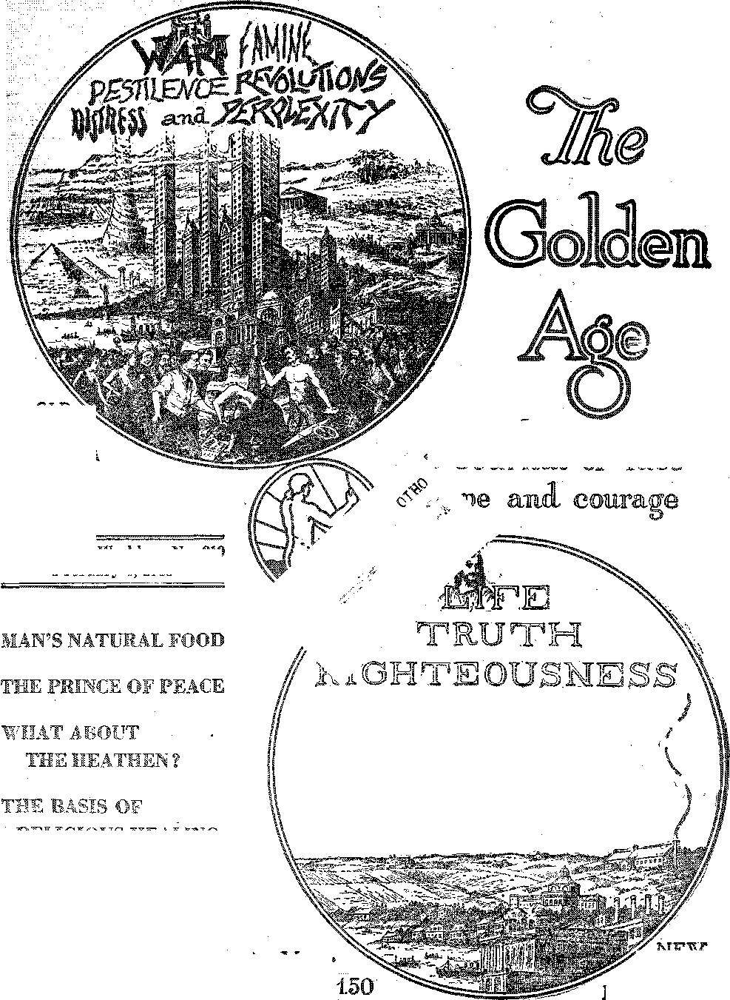
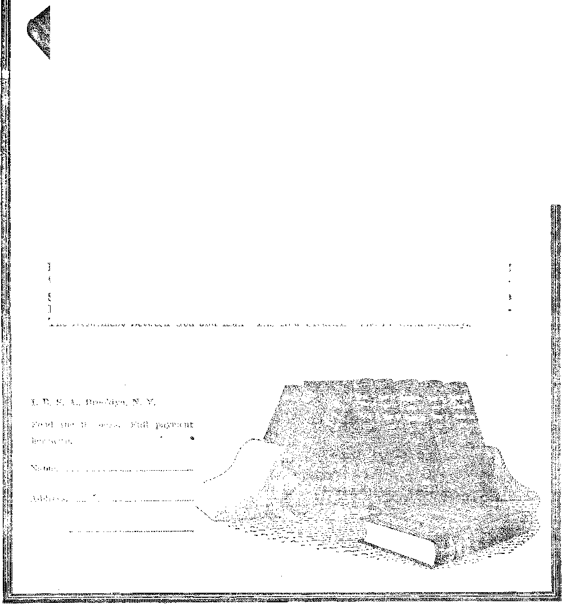

OLI VOL DYING
iUGlOUS HEALING
IJll^
Vol. IX Bi-Weekly N®. 219
February 8, 1928
VORLO
BEGINNING
^-—- 7=--— W%W=^—wuw^^
Labor and Economics
The Inquisitive Boy on the Coad Question ......... 300
Social and Educational
General Hall Passes On ............... 302
Who Am I?.....................315
Political—Domestic and Foreign
Cannon Fodder Tibed _ ................ ■ 299
The Indian Bureau .Again .............. 301
Agriculture and Husbandry
Man’s Natural Food ................. 201
Some Apple Oddities ................... 293
Pears and Plums ................... 201
Peaches, Apricots and Cherries ............. 224
Lemons and Grapefruit ................ 294 The Curious and Valuable Fig .............. 29.?
Dates, the First Food of Man .............. 293
Avacados and Pejibayes •. 296
Mangoes, Pineapples, Papayas ............. 297 ■
The Banana and-the Litchi ............... 297
Berries and Melons ................. 2! :8
Grapes and Raisins ,........ ................ 298
Methods of Fruit Preservation ............. 299
Home and Health
Medical Administration or ran Navy ........... .302
Chicago’s New Board of Health ............. 302
Religion and Philosophy
The Prince of Peace . . sa« .............. 303
What About the Heathen ?—Part 2 ............ . 310
Bible Questions and Answers . . ............ 316 The Basis of Religious Healing ............. 316 Watchtower Station Best of Am. ............. 317
Great Epochs in Human History ............ 318
Littm; Studies fob Little People ............. 319
Published everv other Wednesday at. 117 Adams Street, Brooklyn, N. Y., U. S. A.., bv WOODWORTH, KNORR & MARTIN
Copartners and Proprietors Address: in Adams Street, Brooklyn, N, T., V. S. A. CLAYTON J. WOODWORTH . . Editor ROBERT J. MARTIN . . Business Manager NATHAN H. KNORR , . Sec’y and Treas.
PiVB Cents a Copy—§1.00 A Year Make Remittances to THE GOLDEN AGB Xotiee to Subscribers: We do not, as a rule, send a card of acknowledgment for a renewal or for a new subscription. A renewal blank (carrying notice of expiration) will be sent with the journal one month before the subscription.expires. Change of address, when requested, may be expected to appear on address label within one month.
Foreign Offices : British .... 34 Craven Terrace, Lancaster Gate, London W. 2
Canadian.......... 40 Irwin Avenue, Toronto 5, Ontario
Australasian ........ 495 Collins Street, Melbourne, Australia South African ...... 6 Lelle Street, Cape Town, South Africa
Entered as second-class matter at Brooklyn, N. Y., under the Act of March 3, 1879 .
.. ~
...... ywR.*—. ——— —m» j j j.iii .j.im-v-i. jj— ■'/, i .....I I WIS8B!yiW8aMMMW»"»>»*»»'m8MM‘«! Uff
Volume IX Brooklyn, N. Y. Wednesday, February 8, 1928 Number 21®
AS MAN left the hand of his Creator he was a fruit-eating animal, exclusively so, as far as the record goes. Adam was not instructed to kill and eat his animal companions in the garden of Eden. Instead of that he was their caretaker. He was not commissioned to live on animal products, eggs, milk, butter, cheese, etc. Nor was any mention made even of the grains.
It is true that from the Flood onward man was permitted to eat animal products and even the animals themselves, certain kinds; but the original statement was: “Of every tree of the garden thou mayest freely eat”; and there is abundance of reason to believe that man keeps in better condition mentally and physically when his diet is confined exclusively to the fruits and their humble complements the vegetables.
Of all the fruits the apple is king. It is rich in the lime salts that go to build up strong bones and tooth structures. It contains iron, one office of -which is to carry oxygen to all the tissues and .convert the harmful carbon dioxide into harmless substances tor excretion. It is for this reason that apple sauce is usually served with such rich dishes as roast pork and roast duck.
The apple contains phosphorus, without which the nerve and brain cells are starved for sustenance, It contains magnesia and sulphur, which assist in purifying the blood and clearing the complexion. It has a beneficial effect on the fiver. It is good for gout. A glass of apple cider taken before a meal will correct acidity.
The apple has real food value. The energy locked up in a juicy Jonathan apple is declared to be ecjual to that obtained from a small plate of beans, two-thirds of a cup of rice, two-thirds of a cup of milk, a lamb chop, a potato, or two Blices of bread.
A Widely Spread Blessing
PPLES are raised throughout Europe, southern Siberia, northern India, China, Japan, Canada, the United States, Australia, Tasmania, and- New Zealand. Some of the choicest apple-producing regions of the world are both sides of the St. Lawrence Valley from Detroit to Nova Scotia, the. Shenandoah Valley, the Ozarks and.the Cascades.
Nurserymen plant apple seeds; and when the seedlings are a year old their tops are cut c-ff near the ground, and twigs are spliced on which have been taken from trees yielding the fruit desired. The joint is protected by a ball of day until the union is complete.
Apple varieties do not reproduce themselves from seeds; i. e., a Baldwin apple seed may or may not produce a Baldwin apple tree. An apple-grower has obtained two hundred varieties of apples, all grown from seeds of the same apple tree, yet differing in size, color, shape and taste. While the best known varieties of apples are 338 in number, yet a British authority has listed two thousand varieties, and still there are more to follow.
The apple is a member of the rose family, to which family also belong plums, cherries, peaches, apricots, pears and an immense variety of smaller plants, including strawberries. Nor is an apple orchard in full bloom unlike a rose garden. Only those who have seen a great apple orchard in full bloom can appreciate what floral beauty and fragrance are. It requires ten years to bring an apple orchard into full profitable bearing.
The government advises a more general growing of apple and other fruit trees in home gardens, on the ground that they contribute substantially to the health and pleasure of the average family, arid furnish a supply of valuable food at a relatively small outlay of money.
2&1
Apples and currants are not adapted to long hot summers and mild winters; but in vast regions of the temperate zones it is possible to grow in the home garden apples, pears, peaches, plums, cherries, quinces, strawberries,' raspberries, blackberries, dewberries, currants,, gooseberries and grapes. In warmer sections the citrus fruits and pineapples, figs and dates take the place of these.
The Place to Plant Apples
THE place to plant apples is on a hillside, where the air is always in motion. Indeed, this is a good rule for any fruit which is liable to damage by frost. Air is like water. It flows up or down hill. The places most liable to early frosts are the bottom lands where there is no circulation. Cold air is heavier than warm air and naturally drains into the low places.
Eighty years ago, in the vicinity of Bangor, Maine, lived a farmer who had a hobby of planting apple seeds. Before he died it was estimated that he had started twenty thousand apple trees in business. Today there are twelve hundred acres of rocky land, otherwise worthless, ’which are completely covered with apple trees in a wild state, with every conceivable variety mixed in together. .■
Strange as it may seem, the close relationship of pruning, fertilization and fruit-bud formation is only now beginning to be clearly understood. The proper balance necessary to vigorous growth can generally be obtained by the addition of nitrogen to the soil early in the spring or by early cultivation or by. heading back the tops of the trees.
Apples bear their fruit in clusters on short dwarf branches called fruit spurs. The apples should be thinned to one fruit on a spur. Fruit is set on the spurs every other year, so the best practice of orchardists is to remove all the apples from a portion of the spurs so that they may be prolific the next year. The thinning is usually done just after what is known as the June drop. The fruit is left six to eight inches apart.
Renovation of Neglected Orchards
THOSE who have the knowledge and the industry can make large returns for their
Mme by taking over the care of neglected or-
chards, of 'which there are many thousands of acres in the East and the South. ■1
As an object lesson to his students, Prof. Oscar M. Watson of the University of Tenues-see, atUCnoxville, took over a twenty-five-acre tract of trees over forty years old that had never been pruned or cared for in any way. All the dead and diseased limbs were removed. The living limbs were thinned and pruned so that no two limbs would rub each other, and so that' the sunlight could penetrate the interior as well as the exterior of the trees.
Where limbs were removed, the stubs were scientifically treated so that no damage could come to the trees.- All removed limbs were carried outside the orchard and burned, thus destroying millions of pests. The trees were sprayed winter and summer. The result is that these trees are now loaded down every year with large, firm and delicious fruit.
Orchardists occasionally amuse themselves and interest others by seeing how many different kinds of apples they can obtain, from one tree by grafting. The record in this line is held by the Ohio Experiment Station at Wooster, where four hundred varieties are grown on what was originally a Ben Davis tree.
Picking and Storing
WHEN apples are ready to pick, a few specimens entirely free from disease and insect injury will drop from the trees. It sometimes happens that the apples on the south side and in the top of the trees ripen before those on the north side and at the bottom; and in such cases the tree should be given two pickings, a week or ten days apart. Ten days, at the height of the season, can add much to ' the color, size and quality of fruit.
It is a mistake to pick apples and dump them under a tree; for in the daytime the fruit is warm and at night it is cool, and this alternation of heat and cold quickly ripens the apples, and they do not keep so well. Apples should be handled as carefully as eggs. Small bruises -under the skin soon develop into rotten spots. If apples can be wrapped they should be.
Apples can not be kept in a cellar where a furnace is in operation. To keep well they need a steady temperature a little above £rgqf||g ing. Ventilation, is as important as low perature. A successful orchardist showed US ■ his storage room. It is in a side hill, half underground. Racks keep the fruit off the ground: similar racks prevent its coming in contact with the side walls. The temperature is regulated by drop windows in the roof.
Another method, rather more primitive, is to pack the apples carefully in barrels, tacking a piece of burlap firmly over the top. Select a well-drained spot, in the shade, on the north side of a building. Lay the barrels on their sides, end to end, and cover with eighteen inches of straw. As soon as freezing weather begins, cover the straw with a layer of dirt and over all a few boards or pieces of tin, but never old roofing paper. As fruit is wanted, the end barrel is easily accessible and readily removed.
Apple scald afflicts the Baldwin, York Imperial, White Pippin, Grimes Golden and some other varieties, unless so packed as to provide ventilation. This disease manifests itself by turning the skin of the apple brown. The disease is due to gases breathed out by the apples themselves. These gases are absorbed by the wrapper when the apples are wrapped.
Apple Crops and Markets
THE apple crop in the United States varies greatly. Almost every state in the Union raises 'some for home use, and nearly every state .has some surplus for sale. A large crop is forty-five million barrels, over a bushel apiece for every mail, woman and child in the United States.
New York usually has the largest crop. .Washington and Oregon are large growers. California has over 66,000 acres in apples, Something over half a million barrels are shipped to Great Britain every year.
The prices which the growers get for their apples and those which the consumers have to pay are usually far apart. Not long ago it was noted that in Rochester, the heart of New York’s apple district, when millions of bushels in the immediate vicinity lay unharvested because. the buyers would not give enough for them to pay for hauling them to market, when the city made a special feature of apple week, the retailers throughout the city continued to charge their traditional pri.ee of 5c each and thus discouraged the very thing the apple week was designed to help.
Northern Spies for Apple Pies
fTIESTS have been made with fifty-five varie-ties of apples at the Oregon Experiment Station and those honorable gentlemen hav® come to the conclusion that when it comes to making filling for apple pies there is nothing quite in the class with the Northern Spy, although they admitted that the Rambo and the Maiden Blush were just about as good.
In point of flavor, color and keeping qualities the Jonathan is unexcelled. The Baldwin and the Ben Davis are put on the market in -the largest quantities. Besides these, the varieties most widely grown in the United States ar® the Pippin, Golden Russet, Blue Pearmain, Spitzenberg, Willow Twig, Duchess of Oldenburg, Rhode Island Greening,' ..Gilliflower, Wealthy, Winesap and King.
Northern Spies are slow in developing. Where other trees come into full bearing in ten years, the Spy will often not begin to bear freely until twelve or fourteen years old. It is subject to scab and is often poorly colored unless the tree is well pruned.
The chain stores for some reason best known to themselves seem to make no effort to handle the Eastern fruits, Baldwins, Winesaps, Greenings, Russets and Northern Spies, despite the fact that everybody who has ever eaten these is forced to admit immediately their vast superiority’ in flavor over Western apples. But if you wish to buy any fruit in a chain store, even in the heart of an appje district of the East, you will most likely be "given only Western apples, hauled across the continent.
When it comes to looks, the Western apples have the Eastern ones beaten before they start. Western apple growers take care of their trees; Eastern growers seldom do. In Oregon it is against the law to sell an apple that has a worm hole in it. This is one of the most sensible laws any legislature ever passed; for it lias compelled the grower to spray his fruit trees.
Some Apple Oddities
ROM four different directions — Oregon City, Oregon; Denver, Colorado; Piney
Grove, Delaware ■ and Montreal, Quebec—come reports of the growing of seedless apples. Some of these seedless apple trees are seven or more years of age, and' we must take it for granted that the seedless apple will soon be on the market.
The seedless apple of J. W. McComb, Oregon City, resembles a Gravenstein in color and a banana in form. It is elongated, plump, very tasty, and has stripes of red. and yellow. The 'seedless apple of Frank P. Kogers, Piney Grove, Delaware, bears red fruit of uniform size and color. Its blossoms are different frinn other apple blossoms in that they do not unfold. ' .
Australia 'has produced a new apple called the cucumber apple, used in salads. Though it has the appearance of an apple the taste' is that of a cucumber.
A farmer near Cold Springs, N. J., has devised a system of reproducing initials or picture outlines on apples. It is believed that this is done by pasting silhouttes on the outside of the apple. .The sun does the rest.
A fruit-grower in the vicinity of Minneapolis has produced hybridizations of apples and pears, apples and crab-apples, and apples, pears and crab-apples together.
The largest apple tree in the world is said to be at Stuart, Patrick County, Virginia. It is 120 years old, 60 feet high, 12 feet around, spreads 70 feet, is still hale and hearty and has produced in a single season 132 bushels of Winesaps, some of them of enormous size, Pears and Plums
THE pear, a native of Western Asia, has been introducejl into all temperate climates of the civilized world. The first American pear tree was planted in the garden of Governor Endicott, at Boston, in 1630.
California has 94,450 acres in pears, and ships annually 2,000,000 cases of crated pears, a half million'eases of canned pears and several million pounds of dried pears.
The occasional stony or gritty particles which are found in pears are really the graveyards of minute insects which have attacked the pear while it was still in the bud. The flesh of the fruit grows and surrounds them until finally they succumb.
J. B. Peden, Southmont, Pa., has perfected a seedless and coreless pear, but the cores- of pears are such insignificant things that the invention does not seem of the same value as the invention of the coreless apple.
The plum, like the pear, is a natural laxative, either fresh dr dried as prunes. Moreover, it contains a peptic ferment which is an aid to digestion. California has 196,384 acres in prunes and 42,108 acres in other plums.
Peaches, Apricots and Cherries
THE peach is supposed to have come originally from Persia: and many botanists suppose that the peach and the almond are one and the same thing, because of the nut peach. This variety, which grows on the shores' of the Persian Gulf and .in Mesopotamia, has no skin. It is like a strawberry in texture; and after the pulp is eaten there yet remains the delicious almond within the pit. The eqlor of the nut peach is amber. .
There are some 300 varieties of peaches. The life of a "peach tree is about twenty-five years, ten of which are productive. It grows best on light- soil and is subject to the attacks of many insects. It should not be allowed to overbear, as this reduces the next year's crop. The thinning should be done before the seed becomes hard, as it is the formation of the seed that uses up the vitality of the tree.
All peaches that drop to the ground should be gathered and buried two feet under ground, in quicklime. These drops contain the larvae which constitute the peach tree's worst enemies. ' '
The apricot, half-way between the peach and the plum, is believed to be a native of Armenia. As this tree is fond of the sun, in Europe and Asia it is generally trained against stone walls,, on the southern side.
California has 100,596 acres in apricots, 102,567 acres in clingstone peaches and 82,189. in freestone peaches. In California cherries are subordinated to other fruits; yet there are 17,895 acres in the state devoted to cherry culture, and during the season 300 ears of fresh cherries are sent east and 170,000 cases of canned cherries are shipped.
In Germany and other continental countries cherry trees line the roadsides. American garden cherries are of European stock, but there are numerous varieties of American wild cherries. .
Apples of Gold
WH EN Solomon made his famous reference to "apples of gold in pictures of silver” he is supposed to have had reference to or-. anges on silver platters, a very beautiful pic' ture surely. Some of the best oranges in the world are now produced in Palestine.
With proper care an orange grove will bear better and better oranges, and live indefinitely. There are orange trees in Spain over three hundred years old. The older trees bear larger oranges with thicker, rinds and sweeter pulp. .
Oranges are an excellent food, one of nature’s very best. In the case of many fevers, if oranges and no other foods are taken the patient quickly recovers. The undernourished soon put on weight if fed oranges. Oranges and tomatoes form an excellent salad.
California has 203,902 acres in oranges, and ships over 50,000 carloads to eastern markets. In many parts of California, to obviate danger from frost it is necessary to install smudgepots in the orchard, which put a blanket of smoke about the trees in cold weather and thus give them protection. The orchards in California are irrigated six or seven times each summer.
A modern method of treating orange trees in California is to put a tent over an entire tree and to discharge under it the fumes of hydrocyanic gas. The gassing of the trees is done at nighty for if done in sunlight the gases would injure fruit and foliage. The cost of caring for orange trees properly runs from $200 to $275 per acre per year. The oranges are cut from the trees with scissors.
In ‘the handling of oranges after they are picked, at least twenty separate operations are involved, including grove culling, stenciling, labeling, wrapping, etc.
The navel orange, the greatest commercial orange in the world (but nowhere near the Indian River oranges of Florida in flavor or juiciness), was originally a sport or freak orange which manifested itself in Bahia, Brazil, and was brought to America in 1870 by the Department of Agriculture.
The satsuma or kid-glove orange is a native of .Japan. There are now 18,000 acres of satsumas on the Gulf coast near Mobile, Alabama. The satsuma will stand a lower temperature than .any other orange. It comes on the market after all other crops of oranges are gone and before new crops are ready for the market.
At Avon Park, Florida, an everbearing orange has been discovered, or has made its appearance, of which great things are expected. This tree produces fruit the year around.
Lemons and Grapefruit
T IKE the orange, the lemon and the grapefruit came originally from India, and require a warm climate. Lemon juice is remedial in gout and rheumatism and scurvy. Everbearing varieties of the lemon have been known for some time. The lemon has been suceess-"fully crossed with the grapefruit, producing a fruit twenty-two inches in circumference, which weighs three or four pounds and is said to combine the best qualities of both fruits. California has 45,089 acres in lemons and 10,918 acres in grapefruit. •
It was the Spaniards that introduced the grapefruit into Florida, but the fruit was long in coming to the popularity it now enjoys. Now, in its season, there is nothing more enjoyed for breakfast than a half a grapefruit. The Florida fruit is larger and sweeter than the California variety. Grapefruit does ftot contain so much citric acid as the lemon, but does contain quinine. It is a natural tonic. The 'Spanish name is pomelo.
The juice of the grapefruit dissolves the lime which is formed in the human system and is the chief cause of rheumatism. It prevents hardening of the arteries, is a corrective of kidney and bladder troubles and is believed to be beneficial in preventing goiter and tumors.
The following recipe for grapefruit applesauce is taken from Good Housekeeping:
Cut the skin of one grapefruit into narrow strips of convenient length and soak overnight in cold water to cover. Drain, cover with cold 'water, bring to the boiling point, drain again, and cover with fresh water. Cook gently for one hour. Pare, core and quarter enough apples to fill a two-quart dish, and add these 'to the grapefruit peel with two cups of boiling water. Boil for fifteen minutes) then add two and one-half cupfuls of sugar and one-half teaspoonful of salt, and simmer gently for thirty minutes.
The Curious and Valuable Fig
EVERY ripe fig costs the life of one figwasp. A small female wasp, freshly dusted with the pollen of a wild fig, must force her way into the blossom end of the young fig (which then becomes her tomb) and dust the seeds on its inner surface; or the fig-tree will cast its figs, i. the. young figs will wither and fall. One wild fig-tree with its attendant' swarm of wasps is sufficient for about one hundred Smyrna trees.
The fig is hard to gather. The milky juice which exudes from the stems of the figs when they are. mature 'is very irritating to the flesh. Fig-pickers wear gloves or rubber fingertips or smear their hands and arms with beef suet or some other form of grease or oil. In Smyrna figs are allowed to fall to the ground at maturity, and lie there six days in the sun before they are packed. ■
Figs are rich in sugar and other carbohydrates. They also contain the iron and lime without which the body can not be maintained in health. Additionally they provide roughage, indigestible cellulose, which is essential to keep the digestive organs in good working order.
California has 61,083 acres in figs, of which. 12,000 acres are owned by the fig king, Mr. Ferkner. This gentleman claims to have on his place 600,000 trees, or half as many as are to be found at Smyrna, the fig center of the world. Figs are grown in the Carolinas and in Texas. Texas has grown figs ten inches long: these figs are all canned, being of a very perishable character.
The United States government has authorized California fig-growers to pack the perishable varieties of figs in wines of not to exceed ' twelve percent alcoholic content, and it is believed that this will greatly stimulate the • fig market and the gentlemen and ladies who buy the figs. Otherwise stated, both the figs and the buyers will be pickled, the figs first. Advance orders for the pickled figs were sufficient to absorb the yield of more than 125,000 fig trees.
Oates, the First Food &f Mm
ipiIERE is some reason to believe that dates were the first food of man. In early
Arabian and Christian records it is frequently spoken of as the tree of life. It is the principal food of the Arab, who eats six pounds a day. Americans average to eat six ounces a year, actual import figures. ‘
The date palm is a Ibfty tree, growing to
100 feet in height and yielding as high as thirty clusters of dates a year, with 150 to 200 dates in a cluster. It is the principal plant of the oases. Nothing about the date palm is wasted. Over eighty. percent of all dates are grown in Mesopotamia. ■
Date seeds are roasted and used as a substitute for coffee, or ground and pressed for oil, and the pomace used for stock food. The leaves are used .for matting, baskets and thatching, the fibre of the bark for rope-making, the wood for fence-making, and the terminal bud as a vegetable. The making of date honey is considered an important industry in Spain. Dates are a valuable food for persons .suffering from impaired digestion.
The United States Department of Agriculture has been experimenting with dates, and the experiments are still in progress, but. progress is slow. The date palm begins to bear at six to eight years, and is twenty years old before it produces any considerable quantity of fruit. Only the female tree bears fruit.
Avocados and Pejibasjes
CALIFORNIA has 2,654 acres in avocados (alligator pears), a fruit much appreciated in the tropics, which northerners are only beginning to like; but 'when people become fond of them, they enjoy them very much. 'The avocado is the only fruit that has no acid and little sugar. It ranks higher in vegetable . oil content than the average olive, the protein and mineral content is more than twice that of other fresh fruits, and the energy value is more than that of lean meat.
The avocado family is a large one, more than. 400 varieties being known. Some are as small as apricots, some as large as melons; some are purple, some green, some red; the fat content varies from two percent to thirty-five percent. The avocado is one of the best known substitutes for meat and eggs.
The avocado and the pejibaye stand first among the tropical fruits of economic value. In the lowlands of Costa Rica, Colombia, Venezuela and Ecuador the pejibaye is the staple food of the natives. The fruits are ovoid in form and one to two inches in length. They vary in color from clear light yellow' to deep orange. Four or five stems grow from a common base, and as much as 150 pounds of fruit may grow7 on one stem.
The pejibayes sold in Costa Rica are marketed after being boiled in salted water for three hours. In this condition they are ready for eating, without further preparation. The meat of the pejibaye reminds many people of the chestnut or the eocoanut. It is believed the pejibaye could be raised in southern Florida. California would be too cold for iti
SSanyoes, Pineapples, Papayas
THE mango, "king of fruits,” grows 'wild in
Hawaii, but the better varieties are obtained by grafting. When a person has acquired the taste for the mango even the wild ones, which have a turpentine flavor, are enjoyed ; but most wild varieties are of very indifferent or disagreeable flavor and texture, and their rinds produce sores on. the mouths and faces of some people.
The right way to eat a mango is to thoroughly chill it on ice, then with a knife cut a ring around the rind a little above the shoulder . and another near the opposite end, then rim a knife along the back, ■ connecting these twTo rings. The fruit is sometimes prepared by peeling and slicing. Special mango forks are made by which the fruit may be held, if desired.
. The pineapple, also, is a native of Hawaii, and the finest specimens of this fruit are still grown there in vast quantities. It takes twelve to fifteen months for the plants to blossom and six months more to mature the fruit, but the fruit is generally canned the day it is picked ©r the next day afterwards. The supply of fresh pineapples for American tables comes mostly from the Florida keys.
Pineapple contains a digestive substance sailed bromelin, which is able to digest meat, the casein of milk, and the white of egg, and hence is 'a good digestive at the end of a meal. Warts and corns are cured by pineapple juice, and it is good for sore throats. If a slice oil-pineapple is applied to a corn for eight hours, the corn is softened and made easily removable.
-The papaya, the Hawaiian canteloupe, grows on trees. It is the universal breakfast food in Hawaii, enjoyed alike by rich and poor. It grows-readily on any soil, with little care and n© serious disease or insect pests. It occupies but little space and is to be found in nearly ©very Hawaiian dooryard. It matures quickly.’
The ripe papaya finds a place as an ingredient of certain elixirs said to be expectorant, sedative and tonic. The juice is used in the treatment of eczema, warts, worms, gastric disorders, ulcers and diphtheria. The ripe fruit is used as a cosmetic for removing freckles and other blemishes. The green fruit and leaves are employed as a soap to remove stains from clothing. The roots afford a nerve-tonic. The seeds are eaten as a delicacy and a quencher of thirst and have medicinal properties. The bark is used in the manufacture of ropes.
The Banana and Litchi
JT SEEMS hard to realize that one of the staple foods of the tropics, the banana, was hardly known in the 'United States until 1872, when the first shipment of 250 bunches was landed at New Orleans. The native never eats the bananas just pulled from ths trees, but gathers them while green, the same as we do, and stores them until fully ripe.
The banana shrub is not properly a tree. Its huge stalk, though not unlike a tree trunk in appearance, consists of a compact sheath of leaves. Only one bunch of bananas grows on each stalk; commonly it is fifteen feet off the ground. The harvest hand, cuts the stalk part way up; the fruit causes it to bend until the bunch can be seized and cut from the stalk. A bunch of bananas frequently weighs 100 pounds.
The banana is a prolific reproducer of itself; and at every cleaning of the land it is necessary to destroy many young plants or suckers, as they are termed, so that the field will not become overcrowded. There were at least two varieties of bananas in the New World before the advent of the white man.
Bananas should not be eaten raw’ until the brown spots begin to appear. They are nice baked. Each end is cut off, the jackets being left on. In twenty or thirty minutes they are ready for the table. They should be slit lengthwise and buttered. The butter greatly improves the flavor.
Bananas are very palatable cut up with oranges, both very thin, and served with sugar and a squeeze of.lemon juice.. Recent novelties are banana flour and banana coffee, both- mad® by drying the fruit first, after which the dried
808
slices are ground either coarse or fine, as desired.
If the sliced bananas are dried by the heat of a stove, the heat must be applied slowly and evenly for about three days. The dried, bananas intended for coffee are roasted after they are dried. The result is said to taste a great deal like coffee, and to be devoid of the injurious effects of the latter. Bananas should never be kept in an ice chest, as it prevents them from ripening properly.
A Chinese fruit of which we are likely to hear more in the near future is the litchi. This fruit grows on trees, but strikingly resembles in color and general appearance large strawberries. The white flesh under the red skin is of about the consistency of a muscat grape; and within the delectable pulp is the litchi nut, which is also edible and delightful. Experiments have indicated that the litchi can be grown profitably in Florida. ■
Berries and Melons
OVER fifty varieties of strawberries are grown commercially in the United States.
Each variety lias its favorites. From North to South every American family with a little patch of ground at its disposal has or may have fresh strawberries in season, or even have them all summer through by planting one of the ever-bearing varieties. '
Whoever would maintain a strawberry bed more than one season must be a good weedfighter: and so many growers plow up their old beds immediately after the crop is harvested and set fresh plants for the next year. Strawberries contain much sugar and some salicylic acid and iron. They are beneficial in anaemia, are laxative and act on the kidneys. Strawberries which measured seven and one-half inches in circumference have been grown in America. A good picker will pick 200 quarts of strawberries in a day.
Blackberries (a native American fruit) and the three kinds of raspberries, red, black and purple, ought really to be in every American’s home garden. Raspberries contain much iron and are excellent for anaemic persons, invalids and convalescents. Raspberry juice is excellent in feverish conditions; blackberry juice is an astringent and cheeks diarrhoea.
Gooseberries, those delectable fruits with
Baaotttt, M. «,
which Britishers are so familiar, do not do so well in America; the climate is too dry for them. Giant gooseberries have been produced in England, some of them weighing over an ounce apiece.
The canteloupe melon is from Asia, but the name is from the papal gardens at Cantaluppi, near Rome. When the canteloupe first became popular, Rocky Ford, Colorado, was the center of production; but this has since shifted to the Imperial Valley, California, from which point, in season, solid trainloads of canteloupes are sent out, packed 366 crates to the car.
Grapes and Raisins
THERE are more than two thousand varieties of grapes, fifteen hundred varieties of which are grown in Europe. America has a number of native grapes, some of the most excellent ones in the world. Europeans ti® their vines to a stake; Americans train them on a trellis. The object in each case is to get the fruit off the ground and give the vines plenty of air and sun.
Grapes were never in such demand as now.
Since the country went dry, it seems that everybody wants more grapes than he ever thought of using before. New York city used to use 300 cars of grapes in a season; but now that the city has become arid dry, it uses 20,000 carloads in a season. No one knows what becomes of all these grapes, at least no prohibition agent. ’
Grapes contain bitartrate of potash, which makes them most useful in fever and also in teething complaints. The sugar they contain is very quickly assimilated and warms and fattens quickly. A diet of sweet grapes will often strengthen a feeble digestion and cure anaunia brought on by loss of blood or over- ■ work and worry.
The Muscadine or Scuppernong grapes, growing in the vicinity of Norfolk, Virginia, are of immense size, like the English hothouse grapes, but unlike them do not grow in bunches but singly. They axe mostly used for making grape paste, used incombination with cottage cheese. These grapes were formerly used in making wine; hut nobody makes wine in America, now that the country is bone dry!
Raisin grapes have been grown, and used for ;y the purpose for which they are now used in all ages of human history. There are frequent references to raisins in the Bible, and it is known that they were grown and dried on all shores of the Mediterranean Sea.
Today the world’s supply of raisins comes from California, where there are 184,067 acres in grapes. The fruit is picked when fully ripe and laid on trays between the rows of the vineyard. When half-dried the grapes are turned so that the sun can reach the other side of the bunches. This is done by laying an empty tray on top of the full one and turning 'both over.
Methods of Fruit Preservation .
METHODS of fruit preservation are keep. ing pace with fruit production. More is being learned every season, if not every day. The original method, was to dry the fruit in the sun. This is still used, but is not feasible i®. every climate. Drying is <also done in ovens and over stoves and on a larger scale by heated currents of air. When drying is done in ovens, the fruit is placed on plates and the door of the oven is left partly open. Dried fruits and vegetables require little space for storage, are transported economically and will keep indefinitely. Fruit can be thus. saved which would otherwise be wasted. ~
The treatment of dried fruits with sulphuric acid fumes is regrettable. It is not possible to get this all out of. the fruit, and its presence in the stomach in any considerable quantity is dangerous and harmful. All dried foods should be soaked until they have regained their plumpness and are as soft as they were before drying. After they have been sufficiently soaked they should be cooked slowly until tender in the same water, to prevent loss of nutrients. When fresh fruit can be obtained dried fruits should be avoided.
Certain fruits are kept in perfect condition by simply coating them with paraffine. Another method is to put them up in a cold syrup which preserves them in their natural state. Another method is described as putting the fruit to sleep, an invention of a Liverpool professor. By this method or another one fruit is transported in an atmosphere of carbon dioxide gas. No doubt the icing of refrigerator cars will soon become a thing of the past, methods of gas preservation being apparently much less expensive and in many ways more desirable and probably more efficient. "
Cannon Fodder Tired By Robert Quellen, in the Washington Post
(Copyright 1927. Reprinted by Permission.)
rPHE normal man is a normal man and will -®- fight when angered. He does not willingly fight until his temper is aroused.
When statesmen, playing their game of diplomacy for territory and trade, are unable to make headway by peaceful means, they seek to accomplish their ends by force. They pick the quarrels and then step aside to let others do the fighting.
When statesmen have -set the stage for a fight and found a safe retreat from which to observe the fray, their first big task is to arouse the passions of cannon fodder. A few half-truths, a few adroit appeals to a slumbering race prejudice, a few clever phrases con-oerning the righteousness of the cause, and the thing is done. Nations seethe with hate, and blind, toolv.. unthinking men fly at one another’s throats. The world is given over to organized murder with benefit of clergy, and vulture statesmen hover near 16 pick the bones.
Never yet has there been a war that could not have been avoided. Never more would there be a war if the statesmen who plan and invoke wars were required to take their places in the trenches.
Men who fight and kill to settle their private quarrels are placed in jail. They are criminal^ Men who fight and kill to settle the quarrels and back up the bluffs of diplomats are heroes.
There is very little honest thinking in the world, but there is hope of a better day in the fact that cannon fodder has grown tired of doing murder to please statesmen bent on conquest. . '
The Inquisitive Boy on the Coal Question
(Reprinted from the Montreal Federated Railwayman)
WHAT place is that, pa?
A coal mine, my son. '
Whose coal mine is it, pa?
It belongs to me, my son. .
Do all those trucks of coal belong to you?
Yes, my son, every one of them.
My! how long did it take you to dig it up? Did you dig the coal all alone by yourself ?
No, my son; those men you see going down the mine dug it for me.
Do the men belong to you, pa ?
■ No, my son; those men are free men. No man can own another. If he could, the other would be a slave, but they must work or starve.
What is a slave, pa?
A slave, my son, is a man who has to work for another all his life for only his board and clothes.
Why do men dig so much coal, pa? Do they like it?
Well, no, I don’t suppose they do; but they must work or starve.
Are these men rich, pa ?
Not to any great extent, my son.
Do they owm any houses, pa?
I rather guess not, my son; it takes them all their time to -work for their living.
What is a living, pa? .
Why, a-living—w’ell, for them a living is what they eat and wear.
Isn’t that board and clothes, pa!
I suppose it is.
Well, are they any better off than slaves, pat
Of course they are, you foolish boy. Why, they’re free; they don’t need to work for me if they don’t like to; they can leave whenever they choose.
And if they leave, won’t they have to work, pa?
Yes, of course they will; they will have to work for someone else.
And will they get any more than, a living from him? .
No, I suppose not.
Well, then, how are they any better off than slaves ?
Why, they have votes; they are free men.
How is it better for them to be free ?
Oh, don’t ask foolish questions, boy.
How did the coal get into the mine, pa! '
God made it, my son.
Did he make it for you, pa!
No; I bought it.
Bought it from God! . -
No, from a man.
Did the man buy it from Go'd? '
No, of course not; he bought it from another man, I suppose.
Did the first man it was bought from buy it from God?
No, I suppose not.
How did the first man get it, then? How was it his any more than anybody else’s?
How, I don’t know. I suppose he just claimed it.
Then, if these men should claim it now, would it be theirs?
Oh, bother! don’t be asking such foolish questions.
If you didn’t own the coal mine, how would you make your living?
Oh, I don’t know; I suppose I would have to work.
Would you dig coal, pa? ..
Maybe I would.
How would you like to dig the coal for only your board and clothes, and let the man who claimed it have everything else? •
NobodyM care how I liked it. Poor people must work for their living.
If .these men had a coal mine of their own, would they work for you, pa!
Not likely; they’d work for themselves, probably.
Isn’t it lucky that that man claimed this coal field first and that you bought it?
Why?
If he hadn’t, maybe somebody else would have claimed it, and then maybe one of these men would own it now, and then yon’d have to work for him for your hoard and clothes. -
Maybe, you ought to be thankful to Providence for His goodness to you in giving you a father who can support you without w’orking.
Should these men’s little boys be thankful to Providence, too, pa?
Well, I suppose they should.
What for, pa?
Because their pa’s have steady work.
BOO
JraBSVAHT 8, 1928 ■
Is steady work a good thing, pa?
Of course it is, my son.
Then why don’t you work, pa? Nobody could keep you from digging coal, could they, pa?
No. If I worked I would be keeping one of them out of a job.. ,
That’s kind of you, pa. Do you think if you were to wheel that man’s barrow once while he rested, he’d get mad about it ?
Oh, pshaw! Men like me don’t wheel barrows.
Well, pa, honest now, are these men God’s children, just as much as we are? “
Why, yes, my son, to be sure they are.
Say, pa, do you remember when you bought the dozen marbles for brother Jim and me, and I grabbed them all, and made Jim give me his top, before I’d let him play with them, and you called me a - greedy little hog and gave me a licking! '
80f.
Yes, my son, I remember. .
Well, do you think you did right? ■
Certainly, my son; a parent does right to correct his children and keep them from acquiring bad principles. I bought the marbles for you both. Jim had as much right to them as you.
Well, pa, if those men are God’s children just as much as you, then you and they are brothers, and. if you make them give you nearly all ths coal they dig, for allowing them to get at the coal seams which. God made, isn’t that the same as making Jim give me.his top for a chance to play with the marbles ? .
Oli, bother, don’t ask such stupid questions.
' Say, pa, d^you think God thinks you a greedy little hog, aiifl that he will punish you for grabbing that coal? .
Oh, don’t talk so much! Say, ma, take this child home and put him to bed; he makes m® tired.
The Indian Barean Again.
CONGRESSMAN Frear’s resolution for an investigation of the Indian Bureau calls attention to the fact that this Bureau now exercises virtually unlimited control over Indian property estimated worth $1,600,000,000.
The Indians are often forced to pay for improvements which they do not wish and do not ’ -use. The Pimas are paying for a bridge on the main tourist route between Phoenix and Tucson, which nobody but the tourists ever use. The stream crossed is fordable throughout the year.
cost the Pimas ©ver $800,000 to build this bridge which they d@ not want. The Navajos m paying $100,000 for ® similar bridge.
Indian agents, it seems, have the power to appoint $10-a-month subordinate agents called fudges who, without trial by jury or any known sod© of law or legal practice, have confined Indians in jail and compelled them to work on the highways as convicts.
Disease conditions among the Indians are mich that Dr. Emergen of Columbia University, former health commissioner for New York City, says that "outside of Russia, India or China I know of no nation, race or tribe of human beings which now exhibit such tragic neglect of the most elementary protection against sickness and death”.
The Indians are dying twice as fast as the whites. Their infant mortality is two and five-sevenths times that of the whites. Their tuberculosis rate is seven and one-half times higher. One-fifth of all Indians are suffering from trachoma.
Indian baby boys, at the tender age of six years, are in certain parts of the Indian service taken from their parents and crowded into boarding schools where the food is scanty, where discipline is strict and where the treatment some of them receive is that so eloquently described by a witness before the United States Senate Committee on Indian Affairs. This witness, H. L. Russell, construction officer for the Government, among the Navajo Indians, said:
I have seen Indian boys chained to their beds at night for punishment. I have seen them thrown into cellars under the buildings, which the superintendent called a jail. I have seen their shoes taken away from them, and they then forced to walk through the snow to the bam to help milk. I have seen them whipped with a hemp rope, also a water hose, and forced to do servant's work for employes and superintendents without compensation under the guise of industrial and eik
ucation.
Medical Administration of the Navy
By Dr. W. Armistead Gills (U. 8. Navy, Retired)'
EVERYTHING in the Navy, except the health of the men behind our guns, has been investigated, published, and millions appropriated for improvement.' The only publicity given the blue jackets has been the proverbial country-wide poster to obtain recruits. Experts, both aerial and aquatic, having had their day in court, it seems only just that the medical .officer should speak. The nation’s selected youths are not only being pensioned for life, but deserting while on the sick list, and dying of preventable diseases. Provided such separations are exceedingly small, one is too many if it could have been prevented.
Here is a sample of our statistics for 1920 to 1925, inclusive, incident to those whom we pronounce “physically fit”: Personnel 946,379. 617,832 patients were on the sick list, who lost 12,604,225 days from duty; 621,898 sick days were for tuberculosis, 33,140 were invalided back to civil life; sickness and deaths after discharge, unknown; 728 officers placed on the retired list, due not to age, but to disease* 60,764 surgical operations; 1,540 enlisted men deserted while on the sick list, suffering with such diseases as mastoiditis. I estimate that maintenance of the sick cost $35,000,000. Th® officers on the active list in 1925 possessed 7,295 physical disabilities, among them being blood pressure, defective vision, heart disease, rupture, etc.; 1,103 of these “disabilities” are reckoned as “grave”; 4,839 of our selected risks died either of disease or casualty. We had the smallest sick list in 1926, since the World War, which cost $3,131,596.48. Such state of affairs is disastrous not only to humanity, but to economy and defense. It is my opinion that these conditions are directly attributable to the antiquated and negligent methods used in the medical administration of the Navy.
Restricted speech disturbs moral stamina. Constructive criticisms should be discussed with the people. ■ ■
Chicago’s New Board of Health
CHICAGO has a new Board of Health composed entirely of laymen. The ordinance creating and empowering the new board provides that it “shall pass no rule or regulation which will compel any person to submit to vaccination, or injection of any virus, or medication, against his will or without his consent, or in case of a minor or other person under disability, the consent of his or her parent, guardian or conservator, and nothing in this ordinance contained, or in any other ordinance heretofore passed and in force in this city, shall be construed to authorize or empower any person or officer to so vaccinate, inject, or medicate without such-consent, or to authorize or empower the said board of health to adopt any rule or regulation requiring or authorizing any such vaccination, injection, or medication.”
General Hall Passes On
GENERAL William Preble Hall, retired, former Adjutant General of the United
Slates Army, and well known to Bible Students in all parts of the world, has passed on, at .the age of 79 years.
General Hall, awarded a Congressional medal of honor for distinguished gallantry in action in one of Colorado’s many Indian 'wars, in 1.879, was also brave in his defense of the truth. He was neither afraid nor ashamed to distribute tracts in his home neighborhood, one of the most exclusive in Washington, D. C.
' Though, always to some extent influenced by his early. military training, he nevertheless took his stand oil the Lord’s side and was a meek and faithful worker in the service work, doing with his might what his hand found to do. He toured the world with 'Pastor C. T. Russell on the foreign mission investigation and was the chairman at the Bible Students’ convention in Scranton in 1920. He was a-brother greatly beloved by all who knew him.
Hi® Prince of Pea®e
[Broadcast from Station WBBR, New York, by Judge Rutherford.]
If ANY believe that Christmas .is the am-J-xl niversary of the birth of Jesus at Bethlehem. The date is incorrect. The holy child was born about October 1. 'Many people think that Christmas'being celebrated by the churches is for the purpose of giving honor to Jesus’ name. This also is wrong.
The celebration .at this season of the .year designated .Christmas is one of commercialism rather than anything else. The clergy-make it the occasion to gather more money' from the people. The merchants profiteer by the sale of tinsel and shoddy goods at exorbitant .prices. Others who live by political, schemes, and who outwardly' support a prohibition law, get together and indulge freely .in the ..forbidden beverage. Few people on earth have informed themselves as .to the meaning of the birth of Jesus.
'While the date is incorrect as announced it is always appropriate to speak to .each other" concerning Him whose birth means more to humanity than any creature ever horn on earth.
When Abraham was old and his wife was past the age of women for child-bearing, God promised Abraham that lie should have a son by Sarah. Then He made promise to Abraham that he should be the father of many nations and through his seed all the nations of earth shall be blessed. At the death of Jacob a prophecy was uttered concerning that seed through which the blessing would come. It reads: “The sceptre shall not depart from Judah, nor a lawgiver from between his feet, until Shiloh come; .and unto him shall the gathering of the people he.”—Genesis 49:10.
Shiloh means tranquil one or Prince of Peace. Some Jews believe God and have confidence in' the fulfilment of these promises. Some Gentiles likewise believe God and are certain of the fulfilment of these promises. Today while some people are desirous of knowing the true meaning of our Lord’s birth it seems .appropriate on .this occasion to speak concerning the same.
The promise made to Abraham, which was subsequently repeated to others, thoroughly impressed the minds of the devout Israelites with the '-thought that at some future time there would be born-of a woman of the Jewish people a holy child; and.-that in some way,''to them not understood, -this child would be 'the means of blessing all the .families and nations of the earth. They expected the Jewish nation, to become the greatest nation of earth, and looked for all other nations to flow into it, be subservient to it and receive their blessings through it. These conclusions they based upon the words of the prophets, even though they did not fully understand the meaning of those prophecies. To them the Prophet Isaiah had said: ‘And it shall come to pass in the last days, that the mountain of the Lord’s house shall be established in the top of the mountains, and shall be exalted above the hills; and all nations shall flow unto it. And many people shall go and say. Come ye, and let us go up to the mountain of the Lord, to the house of the God of Jacob; and he will teach us of his ways, and we will walk in his paths: for out of Zion shall go forth the law, and the word of the Lord from Jerusalem.” —Isaiah 2:2, 3.
And. again: “For unto us a child is born, unto us a son is given, and the government shall be upon his shoulder; and his name shall be called Wonderful, Counsellor, The mighty God, The everlasting Father, The Prince of Peace. Of the increase of his government and peace there shall be no end, upon the throne of- David, and upon his kingdom, to order it, and to establish it with judgment and with justice, from henceforth even for ever. The zeal of the Lord of hosts will perform this.”—Isaiah 9: 6, 7.
The birth of Jesus, the greatest event in the world’s history, was about to be enacted. Two thousand years had passed since God had made the promise to Abraham of the coining of the mighty One through whom all the families of the earth should he blessed. During that time Jehovah was executing His - preconceived plan, renewing His promise to keep it fresh, in the minds of the faithful, and shaping the course of those who should participate in this great transaction. And now, as the day drew near, the stage was being set..
The place selected 'was Bethlehem, situated on an elevation south of Jerusalem. It was on.ee the home of Boaz, whose fields the beau-
tiful Moabitish woman Ruth had gleaned, whom Boaz had redeemed and afterward took as his wife. Here Jehovah had used Boaz as a type of Christ Jesus and Ruth as a type of the church, His bride, foreshadowing things yet to come.
'Later Bethlehem was the home of Jesse and of David his son. The name David implies “beloved one’; and it wms there that he was anointed to be king over Israel, from which time he typified Jesus, the mighty Son of God. Jehovah had selected this as the birthplace of Jesus; hence there the birth must take place.—Matthew 2:5, 6; Micah 5: 2.
Away to the north in Galilee stood 'the humble and despised city of Nazareth. It was the home of Joseph the carpenter, a meek, little-known, yet honest, man. He was espoused to Mary. „ We should expect that Jehovah would time everything exactly; and so He did. Authority had departed from Judah; the Romans were in control of Palestine, and the time for the birth of the mighty One was due. Exercising His perfect wisdom and power, Jehovah was' overruling all things to the accomplishment of His purpose. Augustus Cfesar, then the emperor and ruler over all Palestine, issued a decree that all the people-should be taxed. Every one must go to the city of his nativity, there to be numbered and taxed. Joseph the carpenter, although a resident of Nazareth, was of the house of David, and hence must go to the city of David to be numbered and taxed. Naturally his espoused, virgin would accompany him to that city. She likewise was of the house of David through, another line, another reason why she should go there. But above all, the Lord directed them there because it was a part of Ills arrangement.
At that time there were no means of easy and rapid transit. It was a long journey, a tedious and tiresome one. Joseph, with his espoused seated upon an ass, journeyed through the hills along the Jordan probably for three days, and late in the evening reached the city of Bethlehem. The city was crowded; the private homes were full; all the hotels, inns, and other places were crowded out. Tired, worn, and weary from their long journey, they were jostled by the crowd in the narrow street's of the city. Applying to various places for lodging, at each place they were turned away; until finally they found a location where they could sleep in a stall with the cattle. And they retired for the night’s repose.
Over the brow of the hill, in the field one® ovrned by Boaz and gleaned by the beautiful Ruth, the faithful shepherds were watching their sheep. According to custom, they had four watches during the night. Some would watch while the others slept.
The earthly stage is now set. But behold that there was no great earthly splendor or show. In truth the condition of poverty of Joseph and his espoused, and the like poor condition of the shepherds who were now shortly to be used of the Lord, was the only fitting -way that we should expect the Lord wmuld have it. All the pomp and glory of earthly preparation' would have been but tawdry tinsel, detracting from the glorious things that wrere shortly to follow. Each one of the earthly players whom Jehovah had assigned to perform a part upon this stage was humble, meek, and possessed of faith in the promises of God. In heaven there was a host of angels that should participate in the great drama; and all the hosts of heaven vrere witnesses to this unparalleled and never-again-to-be-p^rformed event.
On earth it was night, picturing the fact that the whole world was lying in darkness and a great light was coming into the earth. The time had now arrived for the birth of the mighty One, and all the heavenly hosts were awake to the importance of the hour. Doubtless while others slept, Mary was pondering in her heart the great events that had taken place during the few months past; and while she thus meditated there in the silence of that night, without pain and without suffering there was born to her Jesus, the Savior of the world. And the shepherds watching their sheep in the field were attracted by the angel of the Lord, who came upon them; “and the glory of the Lord shone round about them: and they were sore afraid. And the angel said unto them, Fear not: for, behold, I bring you good tidings of great joy, which shall be to all people. For unto you is born this day, in the city of David, a Saviour, which is Christ the Lord.”—Luke 2: 8-11.
When this heavenly messenger had finished his wonderful speech to the astonished shepherds, then it was, as if waiting a given signal, as^ahttittdinous heavenly host stood forth and the ^ood- tidings of great joy which ulti* ’-stately shall be to all people. Their song was - --biit-..the reflex of what had been announced.
.There.sweet singers -told in words of praise of ... God’s;beneficent purpose ultimately to bless all the families of the earth. It was a song of glory from -heaven, and the hills of Judea echoed the message of peace and good will toward men.
And throughout the Christian era this sweet anthem has filled with joy the heart of many a sad wanderer; and seemingly again and again these have heard.the song from heaven: "Glory to God in the highest, and on earth peace, good will toward men.” , .
The world is-now entering its.darkest period; and when mankind reaches the point of extremity, then will be God’s opportunity to reveal to all sad hearts that the birth of Jesus was the ' greatest event in history to that time; and that shortly this same great Jesus, now in glory, will ■ extend the blessings of life, liberty and happi-- ness-to the whole groaning creation.
- "Glory to God in the highest, and on earth peace, good will toward men.” This was the refrain that the heavenly host sang at the birth of the holy child, Jesus. That was nineteen hundred years ago. The music of the pure, melodious voices of the angels died away on the ears .of the. shepherds, but the prophetic message that their song bore has lived on in the hearts -of Christians. It has been made known to all kindreds, peoples and nations by the distribution. of six hundred and sixty millions of Bibles in...hundreds of languages during the nineteen centuries of the -Christian era.
'"'Strangely, however, although the civilized nations of earth have professed to be Christian ever since the year 800 A. D., and although the angel’s theme has been heard .in song and in speech year after year, yet peace and good will have.....never 'yet been established on earth by
' the rulers and governors, by bankers, industrialists and commercial men, by clergymen, either singly or combined. Neither has glory .. to God .been brought by them, but they have hotly been pursuing their oivn profit and aggrandizement.
- -- Today-the.....winds mf fears of a coming war
........are'rising higher and higher. The nations, nn.... -deE.ih&4elusio»-that- in-time.....of peace: they must
.....prepare-, for war,, are arming themselves with tMfflyCJjiifiSmSits' of war.’ As we scan the horizon we see a gruesome cloud rapidly arising. It is the cloud of war-planes bristling-with guns above and beneath and afore and aft, and loaded -with death-dealing gas bombs and pestilence-spreading germ bombs. Men in authority attempt to quiet the fears of the people with the assurance that the storm will never break. They say great preparation for war is the best guarantee of-peace; that the chemical agencies for killing are so terribly deadly that the civilized nations would not be so insane as to use them but would fight in a more honorable way. But this is the same kind of - palaver that the peace7’prophets dished out to the people before August, 1914.
The birth of Jesus did not bring peace to this planet, neither did the message that. He preached bring international accord and harmony and cooperation.
God is not responsible for. all the unrest and hubbub that has troubled the earth for the past six thousand years. "God is not the author of confusion,” says Paul, "but of peace.” (1 Corinthians 14:.33) The people and the nations are responsible because of not keeping God’s laws. In sorrow God’s prophet cried out: "’0 that thou hadst hearkened to my commandments! then had thy peace been as a river, and thy righteousness as the waves of the sea. . . . There is no peace, saith the Lord, unto the wicked.” (Isaiah 48:18, 22) These words go directly to the root of the trouble; there is a rebellion on earth, and the human family is joined in it. ®
In creating our earth God designed that it should be a part of His universal empire, and that here His kingdom should rule and His will should be done as it is done in heaven. Man was to be God’s representative, so the Lord made him in His own mental and moral image and likeness, and commissioned him to "have dominion over the fish of the sea, and over the fowl of the air, and over every living thing that moveth upon the earth.” (Genesis 1:28) Man was to hold and exercise that dominion in full harmony -with the will or law of his Maker. Hosea. 6:7 points out that Adam entered into an agreement with God so to do. Adam was fully able to render what God demanded, namely, perfect obedience, because Adam had been created perfect in body, brain, and heart condition. God’s work is perfect. God had looked upon Adam and had pronounced him very good;
■ r* AQE
and God, so Habakkuk 1:13 asserts, is 'of purer eyes than to behold evil, and can not look on iniquity’ with approval.
God. is the Lawgiver, or one source of true law. To test out Adam’s loyalty and obedience God. placed -a very slight restriction upon his liberty, a restriction in no sense cutting him off from anything absolutely necessary to his life,.peace, and happiness. The Lord had placed Adam in a perfect garden spot, a paradise in Eden. In it grew.trees' and plants good to look upon, breathing out sweet fragrance, and producing fruits that would keep the human body in a perfectly sound and healthy condition. Since God was the great Planter of this garden, He had the right to manage it as He chose. Very properly then He placed a prohibition on the “tree of the knowledge of good and evil”, forbidding Adam to eat of it. Breaking this law would signify rebellion and would be duly punished. God’s decree was: “In the day that thou eatest thereof thou shalt surely die.” Here was Adam’s opportunity to keep God’s law and live for ever in perfection of manhood in his earthly paradise.. The children that he and his happy wife, Eve, would bring into this earth would inherit this blissful earthly condition.
God through His prophets Ezekiel and Isaiah gives us information concerning Eden. Adam and Eve, though created in the full stature of maturity, were but children in experience. With loving intent God placed them in the care of a guardian angel who should be an invisible instructor of them.«Ezekiel, the spokesman of the Lord, addresses this one, saying, “Thou hast been in Eden the garden of God. Thou art the anointed cherub that covereth; and I have set thee so.” Isaiah, chapter 14, verse 12, tells us that his name was Lucifer, which means “lightbearer”. But instead of lighting Adam and Eve’s way Ezekiel says to Lucifer: “Thou wast perfect in thy ways from the day -that thou wast created, till iniquity was found in thee.”
Lucifer craved a kingdom, all his own, and his craving led him into the sin of coveting the dominion that the Lord had entrusted to Adam. Here was his downfall. Isaiah in amazement says: “Howr art thou fallen from heaven, O Lucifer, son of the morning! . . . for thou hast said in thine heart, ... I will exalt my throne above the stars of God: ... I will be like the Most High”, a ruler who is worshiped as god ©f his subjects. Cunningly, he saw that by cap-
BaooKi.rx. Jr, X
taring his charges, Adamend Eve. lie could gain control not only.of them but -also of ttieto.:.®-:::'1: born offspring and could thus tarn all aside from God’s law and foist upon them his m selfish government. .No matter how many .children' should he born to Adam, all should be hig subjects; and the earth, which was man’s natural home, would be Satan’s domain. Using the subtle serpent as his tool, he deceived Eve into a misstep and then used her to lead Adam to his fall.
There peace fled from the earth. Sin’s hateful form made its appearance and that grea^ dam- .. my monstrosity of death got. the entire human-race in its relentless clutches. “Thy first father hath sinned,” is the reason Isaiah 43:27 gives for it; and Paul adds: “By one man sin entered into the world, and death by sin; and so death passed upon all men, for that all have sinned.” (Romans 5:12) Satan, had gained his objective. He had won mankind over to his side and he immediately established his empire on earth. It was a rebel’s empire. God changed Lucifer’s fair name to Devil, which means slanderer, and to Satan, which means adversary.
God could not countenance the Devil’s empire over earth; He had not authorized it. Addressing the serpent, which Lucifer had used to de- • ceive and which God therefore made a symbol of the Devil, He immediately declared war against Satan, saying: “Thou art cursed ... and I will^put enmity between thee and the woman, and between thy seed and her seed; it shall bruise thy head, and thou shalt bruise his heel.” At these, words the Devil’s enmity was stirred up against every one who sides with God and His cause. On the other hand, each one who would have the Lord’s approval must be at enmity with the Devil’s empire and have no part in it.
All through the centuries the Lord has had His representatives in the very heart of the Devil’s empire. These He has protected and preserved, saying to the Devil’s servants, “Touch, not mine anointed, and do my prophets no harm.” (Psalm 105:15) These representa- .■ fives were inspired of the Lord to foresee and foretell the sure dowuifall of the Devil’s empire and the coining and kingdom of the One who should ileliver mankind from thraldom to -Satan. Jesus Himself, said: “Abraham re- • joiced to see my day: and lie saw it, and was ■ glad.”
King David, the sweet singer of Israel, in an ecstasy of prophetic vision sang of the jggn-of this One called Shiloh: ‘In his days shall the righteous flourish; and the abundance of peace as long as the moon endureth.” Isaiah, prophesying over 700 years before the birth of Jesus, was moved to speak as if he were actually standing beside the crib of Bethlehem’s stable and to say: “For unto us a child is born, unto us a Son is given: and the government shall be upon his shoulder: and his name shall be called Wonderful, Counsellor, The mighty God, The everlasting Father, The Prince of Peace. Of the increase of his government and peace there shall be no end.”—-Isaiah 9:6, 7. .
The fulness of God’s time duly came. The Prince of Peace was about to be born. Satan, aware of the coming birth, was embittered by enmity against the foretold “seed of the woman” and tried to destroy the unborn babe by scheming to have Mary publicly shamed and stoned to death. But the Lord interfered; and all unknown to the big ones of the Devil’s empire the holy child Jesus was brought forth. Later the Devil attempted to destroy the helpless babe and conspired to have Herod’s soldiers sent to Bethlehem to have all babies of its age and under put to the sword. God was quicker than Satan and saved the babe from destruction. Under His tender protection the babe grew to perfect manhood and thus became “the man Christ Jesus”. .
Jesus was at enmity with Satan’s then existing rule on earth, thus furnishing a true example -for all His disciples to follow. He refused to mix in the politics of that day. The Devil •showed Him all the kingdoms of the world in a moment-of time and tempted Him, saying, "All this power will I give thee, and the glory of them: for that is delivered unto me; and to whomsoever I will I give it.” But Jesus refused to be bought. This position He held unto the end for shortly before His betrayal He said: T'The prince of this world cometh, and hath ■nothing in me.”
Jesus neither sought to compromise with Satan’s organization of big business, big politics and big Pharisaical preachers; nor did He seek to reform that organization. He could not do these things and at the same time carry out God’s will that the “seed of the woman, should bruise the serpent’s head”. The
Apostle John says: “For .this purpose the Son of God was manifested, that he might destroy the works of the devil.” (1 John 3:8) How did God’s way dictate that He must do this! By stirring up sedition against the government? By bringing about a revolution? No; for when Jesus >had~fed the multitude of five thousand with five loaves and two fishes and when the people, stirred up by such a miracle, wanted to make Him king He quietly withdrew. God was to malm Him King,'not the people; and God’s due time had not yet arrived. To the Roman governor, Pontius Pilate, Jesus declared: “If my kingdom were of this world [or wicked organization], then would my servants fight, that I should not be delivered to the. Jews.”—John 18:36.
God’s plan for Jesus was that He should die in behalf of mankind. So we read in Hebrews 2:14: “As the children are partakers of flesh and blood, he also himself likewise took part of the same; that through death he might destroy him that had the power of death, that is, the devil.” This appears to be a strange way to destroy the Devil, but the Scriptures show the reasonableness and necessity of it all. Had Jesus bound the Devil and set up His own kingdom on earth at His first coming, the Devil indeed would have been put out of the way, but this would still have left mankind in their sins and dying condition and no redemption price would have been provided. Jesus would have been holding on to His own human nature and His subjects would be giving up their lives in death; also they would still be rebels against God and unacceptable to Him. But, thank God, Jesus gave up His earthly life in harmony-with His own words: “The Son of man came not to be ministered unto, but to minister, and to give his life a ransom for many.” Satan’s princely servants did not see this point: “Had they known it,” says Paul, “they would not have crucified the Lord of glory.” Hence, ‘to this end Christ both died and lived again, that he might be Lord both of the dead and living/ (Romans 14:9) He ascended up to the right hand of God, there to await the time when the Father should authorize Him to destroy the works of the Devil.
Paul points out that Christ’s disciples ar© part of the “seed of the woman” and are to ba associated with Jesus in destroying the Devil’s empire. To quote Romans 16:20: “The God of peace shall bruise Satan under your feet shortly.” Satan has therefore been at enmity with Jesus5 true followers all down through this Christian age. Jesus forewarned them of this, saying: “In the .world ye shall have tribulation.: but be of good cheer; I have overcome the world.”—John 16:33.
On last Sunday morning and the Sunday previous I submitted proof that we are now in the last days of Safaris world and that Christ Jesus is again present but this time invisibly as a glorious divine spirit being. If the Prince of Peace is here why is there not now peace on 'earth and good will toward men? "Why this turmoil and distress of nations with fear and perplexity? The Bible answers: In 1914 A. D. God announced to the Devil’s empire or world: ‘Thus far and no further! Thine end hath come; for the times of the Gentiles have ended.5 The times of the Gentiles had begun 2520 years earlier at the overturning of the Jewish idngdom. At that time God said through the mouth of the Prophet Ezekiel: “I will overturn, overturn, overturn it; and it shall be no more, until he come whose right it is; and I will give it to him.” Nineteen fourteen, the year of the end of the Gentile political supremacy, was the logical date for God to give earth’s kingdoms, lost by the first Adam, over to Jesus, “the last Adam.” There Psalm 2, verse 8, -was due to be fulfilled, where God speaks to his Son Jesus, saying: "Ask of me, and I shall give thee the nations for thin® inheritance, and the uttermost parts of the earth for thy possession.”
• What was to be expected when the great Shiloh, the Prince of Peace, should ask for and receive .the nations' and uttermost parts of the earth for His possession and ‘inheritance? Peace at once? Could there be any peace as long as the Devil’s empire controlled mankind? There could only be .enmity between, the- seed of the woman, the Christ, and the Devil and his seed or servants. The end of Satan’s organization predetermined by Jehovah had come. Hence the Scriptures consistently foretell what action the Prince of Peace should take: “Thou .shall bredk them with a rod of iron; thou shalt dash them in pieces like a potter’s vessel.” Is it not clear now why what peace we had up till 1914 was rudely broken up by world-wide war, and why all nations have since been smashed one way
or the other, are in. great strain, today aad -arAjJ tlireatening to go to pieces?' The League of Nations cannot put them together again. .Iff......
the Gentile Times have ended, how vain will ' ' be,the League’s efforts to try. to reconstruct Satan’s empire or even to hold it .together! To the League of Nations will not go the credit for outlawing war, or checking the next war now brooding, or bringing in “peace on earth, good will toward men”. To the Lord will go that honor, for we read: “He inaketh wars to cease unto the end of the earth.: he breaketh the [battle] bow, and eutteth the spear in sunder: he burneth the chariot in the fire.”
Today the preachers in the church buildings are haranguing the people and saying: ri¥e represent God and speak with authority. Unto us is committed the work of establishing peace on earth and robing the earth in - G-od’s glory in man’s moral achievements preparatory for the coming of Christ; we will go on. and upward _ in our work until we have established good will toward men.’ At the same time some of the principal ones of their flocks sit in. the pews and scheme for another war and figure the profits in dollars that would result therefrom. Still others of the same flocks are planning war laws and passing more war measures to increase the navy, armies and air fleets. Today there are approximately twenty million armed men in Europe ready for another war. When Christmas time is past the clergy will be heard saying, Treparel Prepare’ Prepare!’ They will be urging the people to provide the money to build mor® submarines and other instruments - of destruction to take innocent men to the bottom of the sea.
There does not exist. good will toward men • ’ now because Satan inculcates evil into the ' minds of men. Satan, knowing that God’s announced time for him to quit has come, and knowing that he must engage in the great fight, and knowing that the time'is short until that battle, is hurriedly gathering his forces together for Armageddon. He is foolish enough to believe that he can. defeat the Lord God. That great battle of God Almighty is just ahead. It will be the battle of the righteous Jehovah led by His Field Marshal, Christ Jesus, against the Devil and his organization;, and-the Lord will win. Peace and -good will__________
toward men. will not ©ome until after that battle.
But why is the great battle delayed? Why ■ does not the Lord begin it at once? Jesus gives answer to that question in Matthew 24: 14. The people must first be told the meaning of the World War, the meaning of the famines, pestilences, and revolutions that have followed. They must be told the meaning of the return ...of the Jews to Palestine, the. cause for per" plexity and distress amongst the nations, and why the nations now are eagerly preparing 'for war. They must be told that these things - are evidences of the “last days” and the nearness, of the establishment of God’s .kingdom. They must he told that Jehovah is God and lie alone in the outworking of His plan will bring peace and good will to men. Jesus declared that this "witness must be given to the nations of the earth.. The rulers and peoples must be. served with notice, and then there would come a time of tribulation such as was never known and that trouble will be the last. (Matthew" 24:21, 22) That being . the last trouble, -when it is done peace will not come by efforts of the clergy nor their allies. God through Christ will establish peace. His prophet .says concerning the impending trouble and the peace that shall follow: ’
.“For he commandeth, and raiseth the stormy wind, which lifteth up the waves thereof. They mount up to the heaven, they go down again to the depths: their soul is melted because of trouble. They reel to and fro, and stagger like a drunken man, and are at their wits’ end. Then they cry unto the Lord in their trouble, aadlhe bringeth them out of their distresses. . He maketh the storm a calm, so that the waves thereof are still. Then are they glad because they be quiet; so he bringeth them unto their desired haven.”—Psalm 107: 25-30.
In the language of Psalm "46:10 the. Lord will command: “Be still, and know that I am God; I wifi be exalted among the nations, I will-be exalted in the earth.” Satan, the great impostor and mimic god, will be debased. En-. chained for the thousand years of Christ’s . zeigu^-he wall not be permitted to deceive or ........to.stir..up quarrels, strifes, and wars. Then eternal, peace will with confidence show her serene and smile-wreathed countenance. Christ, the great Prince, will welcome her; the warwill welcome her. God’s good .wiBriaward- men will be shown in the operations. of ...Christ’s kingdom, then reigning in full power and glory for mankind’s blessing. • In beautiful description Isaiah paints the future in these words: “He shall judge among the nations, and shall rebuke many people; and they shall beat their swords into plowshares, and their spears into pruninghooks: nation shall not lift up sword against nation, neither shall they learn war any more.” How the people, freed from the burden of taxation for past, present and future wars, will sigh with relief! “Ye shall go out with joy, and be led forth with peace: the mountains and the hills shall break forth before you into singing, and all the trees of the field shall clap their hands.” —Isaiah 55:12.
The relieved masses of ihankind, the living and the dead, shall gladly gather unto Shiloh, when He wields the sceptre over earth. They will hearken unto Him. “Every soul which will not hear that prophet shall be destroyed from among the people,” declares the Word of God. (Acts 3:23) Thus the trouble-makers and peace-disturbers, including eventually even the Devil himself, will be for ever put out of existence. The obedient ones shall be reconciled by Jesus to God; for our Savior will remove God’s enmity toward the race by paying, the price of peace, His ransom sacrifice, and by training, disciplining, and educating them and lifting them out of their fallen, sinful and perverted condition and restoring them to the image and likeness of God as father Adam originally had it. In such a condition God will be able to smile upon them with approval.
Mankind, humbled and made wiser by its long and painful experience with sin, wall be apt learners of the Lord. Isaiah 26:9 tells us: “When thy judgments are in the earth, • the inhabitants of the world will learn righteousness.” What will be the effect of this work of righteousness ?'The same prophet replies in chapter 32:17, 18: “The work of righteousness shall be peace; and the effect of righteousness quietness and assurance for ever. And my people shall dwell in a peaceable habitation, and ‘ in sure dwellings, and in quiet resting places” on earth. '
"Jehovah is the true and only God." He will restrain the Evil One, bring peace among men, and good will toward men. Next Sunday, it will be my pleasure to speak to you concerning the joys of the people and how God will bring joy to mankind. '
What J&oat the Heatbenl—-Part2 . ......
' (A. Trialogne in Seven Parts. By O. 3. Woodworth. Badtoedst from Station WBBB, j4w, York.)'
Oasi of debaters: John, a good boy,, a church member, very conservative. Thomas, a soldier of fortune, widely- -traveled and widely-read man. Paul, an up-textete Bible Student, a cousin of the other two, a visitor. ’................
The seene w laeated W a fntidt o» State® Island. ■ • - ' .
Thomas s Glad to see you again, Paul. You see I am still here. The folks wished me to remain home for a while. How about going on with our discussion about the fate of the heathen? You interested me the last time' you were down." You seemed to close every door of hope for those poor fellows; and yet, strange to say, you seemed to intimate that there is some way out of the dilemma. . '
John: I should say he did dose the doors! He showed that the Bible plainly teacher that faith in God is necessary in order to please Him; that Jesus is the only way to salvation; that there is salvation in no other name; that no one can come to Jesus for His saving power unless the Father draw him; that every ©ne who comes must call upon the name of the Lord to be .saved, and that they can not call unless they have heard the gospel. Every one of the propositions was Scriptural from beginning to end. I see nothing in the way of hope for the. heathen who are gone. Our duty is to those now living. We must save them.
Paul: If agreeable, I should like to go on with my questions. .'
Thomas: You don’t mean to say that you are not through with those questions yet? Well! Well!
John: I should think you have asked enough already, but go ahead.
Paul: All right. You both agree that the Bible teaches that God is love, do you not? .(1 John 4:8 makes that statement, and so does 1 John 4:16.)
John and Thomas: Surely; we both agree ' the Bible teaches that. 1 ■ ’ .
Paul: Can either of you see that there would be any love in bringing billions of heathen into th.® world only to be damned before they were born?
John: That is an awful question, Cousin Paul. I should think you would be afraid to ask a question like that. You are judging God.
Thomas: I see nothing objectionable in the question. ‘I agree with Wendell Phillips when h® said: “If there is anything in the universe that won’t stand investigation, let it crack.”
But I agree that the question is a very hard one. It is one of the ones I want answered.
Paul: Your desire to have the question answered is perfectly proper, and I. assure you that in due time I shall answer it, but I have many more questions to ask first, and they are just as hard as that one. Give me a simple • definition of justice. . .
Thomas: Justice means fairness, uprightness in thought, word and deed; doing what is right. .
John: I think the best definition of justice is the one that the Lord Jesus gave us when Me said: “Whatsoever ye would that others should do to you, do ye even so to them.”
Paul: 'Both definitions are excellent, and they show that you both have high ideas on the subject. Many people would give a much narrower and & much legs worthy definition. ' . Now I wish to ask if you remember the state-.. . ment in Psalm 89:14, “Justice and judgment are the habitation of thy throne,” God’s throne; and if you can see any justice in bringing billions of heathen into the world only to be damned before they were born? ■
John: Paul, I shudder to hear you ask questions like that.' I should think you would, be afraid that God would strike you dead before you could say another word.
Thomas: I do not feel that way. Paul is only asking something he has a .right to ask, but I do not see any answer” to his question. I do not wish to intimate that God is unjust. I have too much, reverence for Him to do a ■ thing like that; but I have seen the awful conditions in which the heathen live, and if they are to get anything worse hereafter than they are getting now it certainly seems too bad. It looks as though a cog had slipped somewhere, but I can’t just make out what cog it.is that ' has slipped. Maybe it is one of the cogs.....in
my own head.
John: .The best way to. do with questions like this is to set them aside arid not try to answer them, - They can - only have ■ on® effect,— to upset our faith.
Paul: Not at all. A faith that ft an un-
reasoning faith is likely to be an unreasonable one. What we want is a reason for our __faith; and if the faith does not supply a reason for its existence, why should it exist? But I " ““continue with my questions, and I promise that in the. end they will all have a satisfactory answer. Give me a good, practical, brief definition of mercy.
Thomas: Mercy is compassion, forbearance, benevolence, the treating of an offender with less severity than would logically be his due.
- John: I agree with that.
Paul: That is very good. You both have the / right idea. Now I ask you, Do you recall that - in the 136th Psalm, in each one of its twenty- six verses, occurs the statement with regard to - our heavenly Father that “his mercy endureth for ever”; and can you see the least particle of mercy in bringing billions of heathen into the world only to be damned before they were -born?
John: I am shocked beyond measure that you would have the hardihood to question the love and justice and mercy of Almighty God.
Thomas: Tut, tut, John. Paul did not do anything of the kind. He merely asked if we could reconcile the fate of the heathen with the love and'justice and mercy of God.
Paul: I assure you that was all that I did. Further, I remind you that the apostle in Bo' mans. 16:27 says that our great Creator is “ “God only wise”, that is to say, the Fountain of all wisdom; and yet I ask you where you can see the least bit of wisdom in bringing billions of heathen into the world only to be "damned'before they were born.
' John: Paul, you are like your namesake of J - old. Much learning has made you mad. Only
& madman could talk as you do. Do you realise that God-has all power and that He
. could instantly destroy you!
..............Thomas: There was not a bit of reason to say that, John.
Paul: John, I am sorry to shock you, but it seems that one of the best ways to get people ;?to_..ttank is to insist on asking questions that ...... ffiey have hitherto, ignored. In at least fifty--«even-places in the Bible God is called the .....Almighty, .which surely signifies that He prop-..^riy...clainis for Himself all power. Now I ask — yomdwthj-If the bulk of the human family are fo. be. everlastingly damned, does it not show that the Devil is the more powerful of the two and that God has overstated the matter in referring to Himself as the Almighty ? Mind you, l am not denying that He is Almighty. But what I am questioning is the general conception that the bulk of the human family are everlastingly damned.
John: I do not see anything to be gained by such hair-splitting arguments. We know that God is loving, just, merciful, wise and powerful;, and yet we know that in spite of all this millions are perishing, going down to hell, when it is our duty to evangelize them.
.Thomas: I can not agree with you on this stand that you have taken, John. Paul has given us something to think about. Surely ae God who is the personification of love, mercy, justice, wisdom and power would have som® different arrangement than to torture most of His creatures for ever and ever.
John: Well, I stand by the statement of the Presbyterian Board of Missions on this matter. Their -cry is, “Evangelic® the mighty generations abroad, the one thousand million souls who are dying in Ghristless despair at the rate of 100,000 a day.”
Paul: Cousin John, don’t you think it is a little inconsistent for Presbyterians to try to change what God has predestinated? You know what the Presbyterians believe.
Thomas: That is a corker, John.
John: They may not have exactly the right idea on everything, but they have it right on the mission question; that’s sure.
Paul: Now then, John, I ask you, in all sincerity, how you personally feel about this matter. Even if all the heathen were to be converted this very year, would not the cry go up from your heart, and from every other sympathizing, tender heart, ’() Lord, extend thy mercy and thy love to those in everlasting torment, the number of whom must necessarily far outnumber the millions of the living5?
John: I do not think it would be proper to pray such a prayer.
Thomas: I do not see why not. It .would seem that if there is any place in the universe where poor unfortunates need pity, sympathy, mercy, and exhibitions of God’s justice and Hi® power it would' be in a place of everlasting torment, 'if there is such a place. Now that I 'have heard. Paul’s questions, and pondered over them I begin to doubt altogether that there is any such place. ' .
Paul: Now another question, boys. Have you ever considered the question as to whether tor not the heathen or others of the unsaved, as you call them, or the unjust, as the Bible ealls them, have received their punishment at all as yet? . ' -
Thomas: You have asked so many surprising questions that I await your own opinion.
Paul: My own opinion is expressed by the Apostle Peter. In his second epistle, chapter two, verse nine, he declares that "the Lord knoweth how to reserve the unjust unto-the flay of judgment to be punished”. Others may not know how to reserve these unfortunates, but God knows how. Moreover, it is clear that they have not received their full reward as yet; for the Scriptures speak of the day .when the Lord comes to reward every man according to his works. And now just one more word for John, who has been reading Presbyterian Eterature and has been impressed by it. I wonder if John knows that ©n one occasion, right here in New York, three candidates for the® ministry were before the New York presbytery and each was asked what has become of Socrates and Plato. The first declared that they are eternally lost; the second expressed his belief that they will have an opportunity in the next world; the third declined to express himself, saying that he did- not have any fixed ideas on .the subject. All three of the candidates were accepted, which shows that anybody can be a good Presbyterian and not know what he believes as respects the fate of the heathen. Now, John, you have several times expressed yourself as eager to have the gospel preached to the heathen so that they might be saved. Have you any definite ideas as to what has been accomplished by the efforts already put forthf
Thomas: I have. The results ar® practically nothing.
John: That is putting the matter too strongly. I have heard the reports, and I know that much has been accomplished.
John: Now, Tom, that is not fair. You know what I mean.
Thomas: Honest Injun, John. They have hardly affected the situation at all. The Christians in heathen countries are as scarce as hen’s teeth, and about as important.
John {angrily): What do you mean?
BuooKtrw, N.
Paul: Just a minute, boys. I think I understand what Thomas means. Twenty years ago William, T« Ellis, the religious rambler, a Presbyterian of note, said on. the subject of what has been done in heathendom the following, which I clipped and have here in my note book: ■
Up to the present, foreign mission work has been a mere reconnaisance in force, and not a war. One of the hurtful delusions of the home churches, regarding foreign missions (a delusion, sometimes fostered by ill-balanced reports from the field) is that .the whole heathen world is on the verge of conversion to Christianity. One of the commonest figures of missionary oratory represent the nations as crowding into the church. Now, the unwelcome fact is that heathendom, as a whole, has scarcely been budged by missions. Great as have been the missionary triumphs in spots, the whole mass has hardly been touched by the Christian. teachings. Even enlightened Japan, which many persons believe to have become almost Christianized, is still rankly heathen, except for a small percentage of ths population, which, only the mind of faith can invest with conquering power.
Thonlas: I have’ been in Japan, and I know that what Mr. Ellis says is the truth. To all intents and purposes Japan is solidly heathen at this very moment.
Paul: On my own account I have collected some information on this subject since last we met. The Church Missionary Society, Church of England, after more than a century’s labors, showed in India a total enrollment of 35,640 members, although there 'were 3,424 agents at work. Of their Indian converts, of whom many were children, the society said: “At present there is a rather low standard of Christian living” In one year, in Ceylon, the same society spent a little more than $55,000 in making 190 converts out of a population of nearly three millions, but as there were 330 relapses -from Christianity in the same year, the losses at the same rate of cost were $95,000, so that in Ceylon they are going backwards. Canon Taylor of that church, discussing' the results of the ehureh’s efforts in certain lands, said , in one of his reports: ' '
In. Egypt last year there were two inquirers, one a Negro, and the other an Egyptian; but the inquiries did not lead to any further results. In Arabia a sick robber, who was doctored by & missionary, promised to abstain from robbing for ten. days. In Palestine, the one Moslem convert of last year, a weak-minded orphan girl, who required constant guidance, and for.....
whom ths prayers of aU English Christians were evoked, has gone over to Rome, and is now in a nunnery. In Persia we are told that a great and wonderful door has been opened for the gospel, but no converts sre mentioned, and the door seems to consist of a Persian who reads the Bible, which is one of his owe sacred books.
fairly represent the work of the great missionary churches, in my judgment.
numbered only six hundred millions, while today they are double that number. During
have had their workers in the field and their iii»^
only in hundreds of thousands.
John. If God planned to save the nations by missions, then His plan has signally failed.
have been distributed broadcast, ths popular |ji|^
IliiiilitilljilOtHtBs- a' 'matter;
|i||^
paper which they contain in the manufacture iiiiiiiiaOiiiii■ it if w. i® i ; : •' ■
Paid: Passing, for the moment, the question of the relative success or failure of the foreign missions, as at present constituted, is
■illlllilgiililliBlilg
liilBiiiiBB
Ewope» eowtries, too, there is much of want, oppression and misery^ but nothing in the way wf want and misery sudh. as are common in ■ OBiiM
/ofc*.* I have something on this subject of the conditions that exist in heathen lands. It i • s# •iMiOisbop®
-J-quis ton,:: ® nd toh" W gbO f
said:
degradation you have over seen in solitary pkees of extremest wretchedness, those sad eases which haunted you with horror after you passed from them, those
■• :sdrgtey afeades<;pf; fSth>< and ; gmiit<.;kqtoa A;ffcdtoillillf; into one picture, unrriieved by a single shade of tempered darkness or colored light, and lung it. over, one-half the globe: it will still fail to equal the reality. You must put into it the dreary prospect of hopeless conim nance: you must take out of it all hope, ail aspiration even. The conspicuous feature of heathenism is povexiy. You have never Ssxm poverty. It is a -word the meaning of which you do not know. What you call poverty is wealth, luxury. Think of it not as occasional, not. as in purlieus, not as exceptional in places of decjioi misery, but as universal, continentwide. Put in it hunger, nakedness, bestiality; take out c-£ it expectation of something better tomorrow; fill Africa with it; £11 Asia with it; crowd tJi«» vision with men, women and children in multitudes more than twenty times the population of all your great cities, towns, villages and rural districts, twenty for every one in all your states and territories, the picture then huh to reach the reality.
Thomas: A horrible picture, sure enough, ■but it is not ■ overdrawn.;- ■ ;It- -iss-Mll irito f :s.:;.Itofe i It agiw;ftafeto® ptouto is;-;® to||otoSi:-to i; Mwb wall;® toiy
- - ftoi ■;: toto i toil; toiitoB ;fbi v-® itoilBiiiili ■iliew itl®
Ito®®; <0
:i iltoto;;;®'ft toito® BtoiW
■ f ®n totoB: 1 to to; toi llill
. tiaets; tie;; iiiM iii
: itoi-W itoi-toiiliiiiH ii
save them that believe”. According to that necessary to salvation. Again, we saw that the
iliiiiBiiiiiiiffiUBiBllisi
If I could concede for a moment fltai the world aa « I know it, and I know it from ritn ts rim, haring
traveled in all its lands, having seen its dissolute, despicable millions, having seen it in shame and filth, sjnd if I were compelled to think that my God whom I worship, would by any possible method of condemnation send down to hades 1,200,000,000 of my brothers, that know not their right hand from their left, and save a few of us who are a little better perhaps in our morals, I would not go to heaven if I could. I could not worship such a God as that. I would join the hosts of hades in rebelling against such a God. Our God is not a God of that kind. God is love, and is trying to save men. . . .
If the awful thought could once take possession of my mind, that the whole heathen world must of necessity be lost for ever, simply because they are heathen, I would not send them a gospel which reveals such a God. That grim thought alone would shut out all hope for the world, and make eternity itself a dungeon, no difference who might be saved. For how could any rational creature enjoy even a heaven with a God whose government would permit such a stain of 'shame, and dishonor, of cruelty and injustice? Convince men that there is a God at the head of the universe who, without fault of theirs er any chance of escape, will damn the dead, the living and the yet-to-live millions of heathenism, and you will make it for ever impossible that He should be worshiped by any but devils (and by them only because He becomes their chief) and at the same time turn the earth into a gigantic terror, whose ghastly horrors will admit of no relief.
John; I remember seeing those statements by the Bishop, but I did not keep them because I do not agree with them. Nevertheless, I think there may be a measure of truth in his hopes that at least some of the heathen will be saved. In Bomans 2:14 the Apostle Paul says that- “when the Gentiles, which have not the law, do by nature the things contained in the law, these, having not the law, are a law unto themselves”. This seems to show that there is a possibility that, in some way, some of these heathen who do right will be counted as having kept the law of God and thus will be saved. Of course there may not be as many of them as the Bishop hopes; but isn’t that an admissible middle ground?
Paul: No, John; there is no middle ground. This is a text which has been very generally misunderstood and misapplied by good-hearted people. What the apostle is arguing throughout the entire first part of the book of Romans is that “there is none righteous, no, not one”; 'that ssby the deeds of the law shall no man be justified in God’s sight"; “that every mouth may be stopped and all the world may become”, or realize that they are, “guilty before God”. If you will notice the context, it says in the next verse that they “shew the work of the law written in their hearts, their conscience also bearing witness, and their thoughts the meanwhile accusing, or else excusing, one another”. In other words, the heathen sometimes try to excuse themselves, thus acknowledging wrong-doing; and sometimes they accuse themselves, again acknowledging wrong-doing.
Thomas: If the popular idea that God excuses the heathen on account of their ignorance were the correct one, and that if they do the best they know they will be as sure of being in heaven as the Apostle Paul, then there will be some very strange people in heaven.
Paul: That is true, and it is also true that present missionary endeavors are almost exclusively along the lines of secular education. Christianizing endeavors seem pretty generally to have ceased. To maintain a hold upon the children it is necessary that religion be avoided. Of late the government of India has been fostering education by giving liberal allowances to schools of a’satisfactory curriculum, but requires that such schools aided out of the public treasury should be non-religious. The various mission schools compete for such government patronage, to compensate for the falling off in missionary donations. As a consequence the mission schools are purely secular.
Thomas: I think that is all right. What the natives need is a common school education. But I do not see what that has to do with making Christians of them or saving them. I should think the governments could attend to their education just as well or better than those who think of education only in terms of religion.
Paul: And so they could. Indeed, the only proper place for imparting education such as would prepare for citizenship is in a government school. Religion should be kept out of government schools, and let those who run religious schools keep their hands off the government. The two do not mix and should not be mixed. _Of course the aim of the missionaries is to so influence the children that they will believe -what is told them along religious lines. Indeed, most of the converts are obtained from among the children., and not in-
frequently under very sad circumstances. Thus Bishop Pelkman, of Lahore, India, wrote to some of his former parishioners in Munich, Germany: ■ '
Twenty-two thousand three hundred and eighty-nine persons have died of the plague: wonderful are God’s ways! One is almost persuaded to think that the Lord sentenced the heathen adults to die that their children might fall into the hands of' the missionaries and be educated as good Christians. The last two famine periods brought us several thousand new adepts.
This indiscreet paragraph of the Bishop was squelched by the Munich Papal. Nuncio.
Joliii: I should think it deserved to bo.
Thomas: And so do I. According to that, the best way to make the whole of heathendom Christian would be to kill off all the parents, no matter whether they went to hell or not.
Pmil: Concerning the status of education in the tenets of the Christian religion which exist among the converted natives, the London Missionary Society says that “a very large proportion who profess themselves Christians, and 'are baptized, are so very ignorant that great care and patience are required to make them intelligently acquainted with the fundamental truths of Christianity”. On the same subject a Wesleyan M.ethodist mission worker in Malaya wrote that “'when one questions them by themselves, the one appalling factor that forces itself upon one is their unimaginable ignorance.
In most the anxiety for daily bread is the largely bulking factor for their consciousness.” That is the condition of the classes that the missionaries reach. There is another class that they do not reach, and concerning them „ a Presbyterian missionary, J. C. E. Ewing, I). 1)., who spent nine years in mission work in India said:
Among the 363,000,000 of the people in that eoun* try there are 10,000,000 young men who speak the English language and who are instructed in the Western ideas that we are taught. The higher caste -are thoroughly learned in the literature, the, religion and the sciences that are the basis of the education of the people of this country. The old idea, of a vengeful God' who must be propitiated by numerous gifts and many prayers lias given way to the modern spirit of infidelity. The educated men of the East no longer believe in the gods of their fathers. They have aban-cloned them for ever and replaced them with the teachings of Colonel Robert G. Ingersoll, of Paine, of Voltaire, of Bradlaugh and of every other atheistical and pantheistical teacher.
Thomas: Another evening has gone by, Paul; and yet you have not answered my question as to what has become of the last generation of one thousand millions of heathen now dead. .
Paul: I know it, Tom; but I must be going now, and we will take this matter up again. What I want to get you to do is to read in the meanwhile Judge Rutherford’s little hook Where are the Dead? and then you will have a full answer to this question.
Who Am I? By Walter L. Peterson
I AM present every where, and with everyone, poor as well as the rich; with the wise as with the fool; with the children as with the grown-ups alike.
I am small, and I am large. I am so small sometimes that it takes a good eye to see me. It is then I make the most trouble. When I am large so that all can see me, they laugh at me and think very little of me.
I have been with man ever since lie was created. If J had not been in the garden of Eden I might not have been at all.
I creep in everywhere, under the most watchful eye. Nothing is too small for me and nothing is too large.
I am the cause of much, trouble and 'worry.
People try to avoid me, but try as hard as they may, they cannot avoid me at times; they would do anything to get rid of me, but I stick to them like glue.
I have caused the rich to become beggars, and I have caused the poor to become rich.
Some have paid large sums of money to have me corrected.'
Some curse me, while others praise me, saying that they would not have become great without me. ■ •
I am composed of seven letters.
I am M-I-S-T-A-K-E.
Bible Questions and Answers
/"YUESTION: Did Adam have immortality!
** Answer: No; the Scriptures plainly state that Adam died, according to Genesis 5:5. Clod placed Adam on trial in order to test his obedience. Had Adam been obedient to the Lord for a certain time, lie would have been granted everlasting life on earth. The Lord told Adam: ‘’But of the tree of the knowledge of good and evil, thou shalt not eat of it: for in the day that thou eateui thereof thou shalt surely die.” (Genesis 2:17) Note that the Lord did not state that if Adam disobeyed he would go to eternal torment. If eternal torment were the wages of disobedience it would have been the most appropriate time to announce it to •later,-tthe
Devil tried to impress his doctrine of ini-liHiiMliiMiiiiMiiMiMiiBlinHeibsistltAuwe-
road that the Devil in the guise of the serpent ..........Pit®...............Phill......Mt......M foW.....ItRl ‘ The • dbetrihe- of
Ilie immortality of the soul and that all men ||iHit ■ is • a' • lie f: and of and immortality is the gift of God to the obedient ^liiliiiisiii liOliMiiOiiiBiiii ■
Question: "Will the dead come back with the same body that went down to the tomb? Is it reasonable to believe that the same identical substance will be in the resurrected body?
Much-of ithe-foaforial-thatpdni--| Jlllilihllieh®I body May I havb lalfoady-ibeea-llillliiiiliifiato ■ -parts -ofItld • ■ earth,- • -Sr -the -animal-life.the resurrection time comes it is reasonable to be-||||if|iHt|-if |the< individual is not- of the •spiritual class, and there will be very few of such, |||f|ii||li|age; |-forth,:. with a • | reasonably ' sound body prepared by the Lord Christ Jesus. The body will have much the same features so that the individual will be recognized by relatives. Jesus told the Jews, “Ye shall see Abraham, Aidf JsaM,- - aid- -• jieph»? -Wnd •■-■ ■ alb •- -the .prophe^fi! in the kingdom of God.” (Luke 13:28) In ) order to see and know the various prophets, it is reasonable to believe that they will come ? forth in the awakening of the rcsurrei-tion with much the' same features that they previously had. The resurrection time vviji mean i great joy and blessing for the peoples of earth.
Question: Please tell me why Catholics raise their hats to th<? Catholic Church and to the priests-pf-the- Church?
Answer: Catholics do. this out of respect and I reverence for these individuals and edifices. However, much of the respect that is shown to the clergy should ho given to Jehovah God. Jesus said: “Call no man your father upon the -f earth: for one is your Father, which is inlf heaven.”—Matthew 23: 9, •
Question: Were Adam and Eve Jews?
Answer: No. The term Jew was originally applied to’the members of the tribe of Judah. The Israelitish nation did not come into exis- || tenee until at the time of Jacob’s death in Egypt.
Question-: When will the time of trouble such as the world has never known, stated in Matthew 24: 21,22, take place ?
- Answer: This great time of trouble is in the -immediate future: and for this the nations of earth are desperately preparing in the manufacture of airplanes, high explosives, and poison gases. This is called by the Bible the battle of Armageddon.
The Basis of Reludoias Healing
bers of these healing cults volubly deny ihat their work in any way involves hypnotism, they could not fail to note the resemblance wore they aware of the facts in the CO,--lBl-:c | --: IIj Jis-: --- -• < - • - |ll-|lli||||l < c -
lively controlled by an idea that has taken full possession hOlgMBMiiiifiBiiM
EBBliilh-Ortirie-mh< IBeligious- HeaSng, -by: ________________________llOMllllH dig published^in'/tW-Journal of the American Medical Association, ■f iiiilif ■■ p ripr ess l|r -mrir
of his mind as he may be by the operator in what he readily recognizes as hypnosis.
The appeal, to the ego is tremendous. What could have a more expansive influence on the personality than to believe, without the slightest shadow of doubt, that one is-essential to the plans of God himself; that one partakes of the qualities of God? Followed to its logical conclusion with regard to disease, if God is omnipotent and man partakes of his qualities, indeed, if God is in man, disease is a very minor matter and can readily be overcome through this power within.
And what could be more comforting than to know beyond the possibility of any doubt that one may turn at will to a higher power with absolute assurance that one will be given strength to meet any difficulty that may arise?
Those who have attained this belief actually report a sense of security beyond their ability to account for otherwise, and those who have learned io carry on what they term effective communion with whatever power it may be that they recognize, actually do report a restoration and a rejuvenation, as a result of this communion.
The attainment of these convictions is reported to add new zest to life, to develop confidence, serenity of mind, cheerfulness, and a preponderance of loving affections toward others.
The psychologist Henry H. Goddard, Ph. D., reports one of the most systematic studies that has ever been made on. this subject. Goddard included in his study more than 1,600 records of individual cures, mainly taken from the divine healer Dowie’s work.
About two-thirds of these were females, and they ranged in a.ge from 6 to 86 years. The greatest number Tanged from 20 to 50 years, and among women the married were about three times as numerous as the unmarried. ■ Further results of Dr. Goddard’s study were m follows:
"The duration of the disease from which they were healed varies from a few months to fifty-two years. The average time is about twelve years for each sex. Thirty-three per cent report instantaneous cures, 50 per cerit gradual, and. 17 per eent reported that they were not yet perfectly healed.
"It must be noted that while 33 per cent report instantaneous healing, it is clear from their own account that they almost always mean that pain ceased instantly. And it may be mentioned that of all the returns that give data on that point, almost every one shows that pain, ceased at the time of prayer.
"Again, of the whole number, 76 per cent were treated or prayed with by Dr. Dowie in person; 7.5 per cent were prayed for by him at a distance,”
It may well be that religious healing makes use of forces not ordinarily recognized, It remains for us to study the nature of these forces, to determine how far they are present in the normal person, how far they may be applied with sanity, and what method of application is most advantageous.
- It is remarkable that the entire matter should be so loosely controlled. To place emphasis on the mental side of life is most important; and, when this emphasis includes a sound philosophy and application of common sense, its contribution can hardly be overestimated.
But when it results in the promiscuous teaching and practising of mental tricks and self-delusion, it is a positive menace. To disguise such practice in the name of religion or of science as a moans of capitalizing the credulity of the ignorant is despicable.
Those who advocate religious therapy will do well to compare their methods with other methods which are similar, but which leave out the religious element for good reasons,. In this connection, it is interesting to consider the results obtained through various systems of moralization. and reeducation used in the practice of psychiatry. Another system in which religion is purposely eliminated is in Coue’s method of autosuggestion, which the religionists have so thoroughly embraced.
Watchtower Station Best of All
The following letter to Judge Rutherford will be of interest to many of our readers: Dear. Brother Buther.ford : .
This morning I was out for a-while, canvassing for the Freedom for the Peoples booklet amongst business men and lawyers. (Sold 76.) Had some experiences that rejoiced my heart; and I hasten to tell you, for I think you will be cheered and much encouraged. A number told me that WBBR is the. station. “I always tune for their programs. They are the best,” they said.
One man, who has a large business, said;
“Say, Kleinhans, you people are doing a great work. Do yon know WBBR is opening the eyes of the people? I always get that station. Why, the other day I heard a lot of customers talking radio. They were all of one mind. Yes; I, too,' like the ‘Watchtower’ best of all.”
We are also grateful for our privilege here, from the local Station WCBA, Allentown. It is reaching many people in the Lehigh Valley, with very encouraging reports received.
Rejoicing in the Lord with you, I am Lovingly your coworker, Hiram P. Kleikham&,
Great Epochs in Human History
[A juvenile Bible story radiocast from Station WORD, Chicago, by C. D. Nicholson.]
THE first climax, or turning-point, in history was the great flood of Noah’s day.
You are doubtless able to recall many of the events which took place previous to the flood. Adam and Eve, the first human pair, began life surrounded by perfect conditions in the garden of Eden, but lost their pleasant and happy home because of wilful disobedience to God; and thus was begun the first great epoch in human history.
After the flood, when Noah and his family moved out of the ark a new world or epoch in human history was begun. This period lasted from the flood down to the time when God gave His law7 to Moses at Mount Sinai. During the second epoch, the human family had grown from the one family of Noah until it now embraced many small nations. This period of time witnessed God’s great covenant made to Abraham, promising through his seed to bless all the families of the earth; it witnessed the birth, the growth to maturity, the life and the death of Isaac and Jacob, the selling of Joseph by his brethren as a slave to the Egyptians, his rise to power as the "prime minister of Egypt, and finally the gathering of all his family there, where they grew and prospered for many years.
After the death of the king of Egypt who had been a friend to Jacob and his family, the Israelites were made slaves to the Egyptians. Toward the close of the second period of human history, God called Moses to deliver His people from Egyptian bondage. After considerable difficulty in getting permission from the king of Egypt to leave the country, they miraculously crossed over the Red Sea on dry land and in a little more than two months reached Mount Sinai, where they camped for nearly a year. It was while they were camping here that God gave them through Moses His first great code of laws. : !
The next period or epoch, which had its beginning at the giving of the law to Moses at Mount Sinai, concerned the nation of Israel; for now they had been delivered from bondage to the Egyptians and were to become a free and independent nation with Jehovah as their chief counsellor, protector and. guide.
God permitted the king of Babylon to overthrow the Jewish nation, carry all the people away captives and to tear down completely and spoil everything which they had built, including their cities, homes, and even their temple, until not one stone was left upon another. This punishment came to them from Jehovah because of their failure to obey His laws and to keep the commandments which He had given them.
The next or fourth epoch of human history was a period of 606 years in length, lasting from the overthrow of the Jewish nation by King Nebuchadnezzar to the birth of Jesus, or Anno Domini, which was 4,128 years from creation. This epoch saw the decline and fall of Babylon as a world empire, to be superseded by the Medes and Persians, and they in turn reached their heights of glory and finally were overcome by the Greeks. In due time the Greeks were conquered by the Romans, who established the fourth universal empire of earth, which was still in existence at the time of Jesus.
All these world powers have now passed into discard and will never again rise to universal dominion. However, according to the Bible, there is yet another universal empire of earth. It will be a government established by Jehovah. It was spoken of by Daniel, the prophet, who said that at the proper time ‘the God of heaven shall establish a kingdom which shall never be destroyed [or overcome by other nations], but it shall break in pieces and consume all these kingdoms [of earth], and it- shall stand for ever’,-—Daniel 2:44.
The Lord Jesus Christ is to return to earth for the special purpose of establishing God’s kingdom and ruling the whole earth, for a thousand years. His kingdom is to be the most wonderful that the world has ever known. AU the powers and resources of Jehovah will be behind it, and all evil and the results of evil which ■ the world has experienced for 6,000 years will be wiped away.
The Prophet Habakkuk says that in that day ‘the knowledge of the glory of the Lord shall fill the whole earth as the waters cover the sea’. (Habakkuk 2:14) We are told in another place that at that time ‘none shall need to teach his neighbor or his brother, saying, Know [thou] the Lord, for all shall know him, from the least unto the greatest’.—Jeremiah 31: 34. _
Little Studies for Little People
(Study Thirty-Three)
The Punishment of the Wilfully Wicked
278. A thousand years is a long time. It is hard for us to imagine even a hundred years; for none of us have ever lived that long. For some of ns, ten years is a pretty long time, and takes up nearly all of our lives.
279. But a thousand, years are nothing to God. You remember that He says in the Bible that “a day with the Lord is as a thousand years, and a thousand years as one day”. God is for ever and ever; so of course a thousand years, or a million years, are nothing to Him. He is so great and wonderful that we cannot imagine even half of His glory. ■
280. In a thousand years of Christ’s kingdom, which, is coining upon the earth now, mankind will be raised up from the terrible state of wickedness i nto which they have fallen, and will have full chance to see the blessings coming from the reign of the Lord upon the earth. .AU this time the Devil will be bound, so that he cannot put temptations in the way of the people who are trying to get back to health and happiness and life. '
281. Then, for a final test, God will permit Satan to go free for a very little while, and then will come the great proving-time for all mankind. Each person will show, by his actions in those days, whether he loves God and wants to Eve on the earth under His kind rule for ever, or prefers to do that which is bad in God’s sight, and follow the ways of Satan.
282. Then those people who have proven, after & thousand years of experience with good things, that they would rather have evil things and evil companions, will, have had their full chance; and God will give them just punishment. We remember that God is perfectly just. He is also loving and kind.
283. When the people who decide to be wicked have had their full chance, in the thousand-year trial, then God will cause them to die; and they will never be given life again. That is their punishment, and also that which will be visited ■•upon Satan. It is called the “second death”, :and from it there is no return. It is simply destruction, complete and lasting.
284. God does not torment anybody or anything, The wicked people would only make themselves and everybody else 'unhappy if they lived on for ever, so God is much kinder to them by simply putting them out, as we blow out a candle flame, so that they are not any more. <
285. Satan is in the last group of all ’the - wicked to be destroyed. But he and all his bad angels will surely be blown out at the end of the thousand years. '
286. Then everyone will rejoice, and forget all about the troubles and aches and pains they ever had, and never be sick or sad any more, but joyful and strong, lifting up their voices in song and thanksgiving to the great Lord God Jehovah.
Questions on Study Thirty-Three '
. 278. How many of you are ten years old? How many have seen a person a hundred years old? How many hundred-year periods are there in 1,000 years ?
279. Do ten years seem'long to you? Would a thousand years seem long to you? Would a thousand year® seem, long to God ? Why not ? '
280. In giving the people of the earth a thousand years in which to choose life, can we not see that God is dealing most graciously with them ?
281. Why will God. let Satan go free for a time at the end of the thousand years? Will each person then, by his acts, decide his eternal destiny?
282. When a person has had good things for a thousand years and then expresses a choice to have evil things, what is the best thing to do ?
283. What punishment will be visited upon those whose final choice is to be wicked ? Is this Satan’s punishment also ? What is the second death? o
284. Would it be a kindness to keep people alive for ever who really wish at heart to do that which is wrong? 'Would God be thus unkind to them ?
285. What notoriously wicked person will be in the last group of those that are destroyed? Is there any chance that he will escape destruction?
286. Will everybody be glad when Satan finally gets his just reward? After that will they ever have any troubles, aches, pains, sickness?
Come ye that love the Lord And let your songs abound, With heart and voice in sweet accord. Now spread his fame around.
IM all his children sing .
Glad songs of praise to God.
■ Yes, children of the heavenly King Should tell their joys abroad.
RUTHERFORD
ON CREATION
EARTH „MAN -
DEGENERATION ■■ BIBLE -AWAKENING
|COM ING OF
i
DELIVERANCE......-By Judge Rutherford—-A vivid description of the Divine Plan, outlining
God’s progressive steps against evil and the establishing of a. righteous government on earth. STUDIES IN THE SCRIPTURES—Their titles tell the scope of the books — The Divina Plan of the Ages—The Time is at Hand—Thy Kingdom Come—The Battle of Armageddon— The Atonement Between God and Man—The New Creation—The Finished Mvsterv
REGENERA-
11 ON